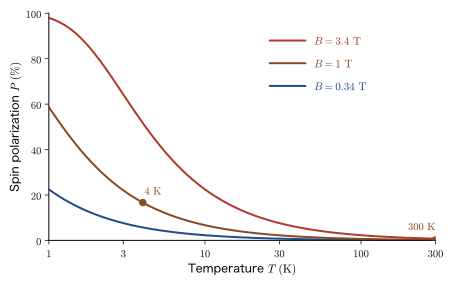

Chapter 23Spin — The Electron's Other Angular Momentum
Why do iron and cobalt become magnets? It seems that this could be explained by the magnetism produced by the motion of the electrons in an atom around the nucleus (orbital motion), but in fact most of the properties of iron as a magnet originate not in the orbital motion of the electrons but in the other angular momentum that the electron possesses—spin. Moreover, unlike the orbital angular momentum we learned about in the previous two chapters, spin is not a function of the coordinate $\bm{r}$, and it cannot even be written in the form $\bm{r}\times\bm{p}$. In this chapter we start from the historical reasons why spin became “necessary,” and then assemble the tools for treating spin mathematically—$2\times2$ matrices, two-component column vectors, and the Pauli matrices.
The order of the story is experimental fact → idea → equation. First, from the knowledge of electromagnetism (AD 03, “Introductory University Physics”) that a circular current becomes a small magnet, we derive the magnetic moment $\bm{\mu}=-\dfrac{e_0}{2m_{\mathrm{e}}}\bm{L}$ produced by the orbital motion of the electron, and we explain the Zeeman effect, in which a level splits into $2l+1$ levels in a magnetic field. Next we look at the Stern–Gerlach experiment, in which a beam of silver atoms sent through an inhomogeneous magnetic field splits into two beams. In a theory with orbital angular momentum alone, the number of beams into which the atoms split is $2l+1$; that is, there must always be an odd number of beams, and for the ground state of silver ($l=0$) there should be just one beam. The observed result of “two beams” cannot be explained unless we give the electron a degree of freedom, distinct from the orbital motion, that has exactly two states. This is spin.
The spin quantum number of the electron is $s=\tfrac12$, and it has no counterpart in classical mechanics. The picture of “spinning about an axis” was the clue when Uhlenbeck and Goudsmit conceived of spin, but we also confirm, with a number in this chapter (if the electron is regarded as a classical sphere, its surface speed comes out to about 170 times the speed of light), that the electron is not actually rotating. Particles whose spin quantum number is a half-integer (electrons, protons, neutrons) are called fermions, and particles whose spin quantum number is an integer (photons) are called bosons; the former obey the Pauli exclusion principle and build the shell structure of atoms and the Fermi level of metals. The mathematics of spin is surprisingly simple: $\hat{S}_x,\hat{S}_y,\hat{S}_z$ are $2\times2$ matrices, and the wave function becomes a two-component column vector $\bigl(\psi_+(\bm{r}),\ \psi_-(\bm{r})\bigr)^{\mathsf T}$. The tools constructed here are the foundation for what follows: the algebra of general angular momentum (Chapter 24), the addition of orbital and spin angular momenta and the spin–orbit interaction (Chapter 25, Chapter 26), and many-electron atoms (Part VII).
- Derive, from the analogy with a circular current, the magnetic moment of the orbital motion of the electron, $\bm{\mu}=-\dfrac{e_0}{2m_{\mathrm{e}}}\bm{L}$, and the Bohr magneton $\mu_{\mathrm B}=\dfrac{e_0\hbar}{2m_{\mathrm{e}}}$, and check the numbers for hydrogen in the Bohr model (current $1.05\ \mathrm{mA}$, magnetic field at the center $12.5\ \mathrm{T}$)
- Derive the Zeeman effect $E_{nlm}=E_{nl}+m\mu_{\mathrm B}B$, and be able to explain logically the necessity of spin from the Stern–Gerlach experiment (with orbital motion alone there should be $2l+1$ beams, and for silver, with $l=0$, one beam, yet two beams are observed)
- Define the spin angular momentum $\hat{\bm{S}}$ by analogy with the orbital angular momentum, and be able to derive from the two observed beams that $2s+1=2$, that is, $s=\tfrac12$, $m_s=\pm\tfrac12$, and $\abs{\bm{S}}=\tfrac{\sqrt3}{2}\hbar$; be able to explain with numbers that spin is not a rotation about an axis
- Be able to tell the difference between fermions and bosons, and to determine the statistics of composite particles (such as $^3\mathrm{He}$ and $^4\mathrm{He}$) by counting
- Using the spin variable $\sigma$, the spin functions $\alpha$ and $\beta$, and the two-component column-vector notation, derive the $2\times2$ matrices of $\hat{S}^2,\hat{S}_z,\hat{S}_\pm,\hat{S}_x,\hat{S}_y$, and be able to check the commutation relations by matrix products
- Be able to handle the properties of the Pauli matrices $\sigma_x,\sigma_y,\sigma_z$ and their product rule $\sigma_i\sigma_j=\delta_{ij}E+i\sum_k\varepsilon_{ijk}\sigma_k$, the probability interpretation of spin orbitals (two-component spinors), and the action of $\hat{S}_\pm$
- Be able to estimate, from the Hamiltonian of an electron spin in a magnetic field, $\hat{H}=\tfrac12 g_s\mu_{\mathrm B}\,\bm{\sigma}\cdot\bm{B}$, the resonance conditions of electron spin resonance (ESR) and nuclear magnetic resonance (NMR), the spin polarization $\tanh(\Delta E/2k_{\mathrm B}T)$, and the magnetic moments of magnetic materials
Source notes: Yasuhide Mochizuki, “Physics Notes: Quantum Mechanics 3,” pp. 1–7.
23.1 Orbital Motion and the Magnetic Moment — From a Circular Current to the Bohr Magneton
23.1.1 A circular current is a small magnet
According to electromagnetism, when a current $I$ flows through a circular wire, a magnetic field is produced at the center of the circle. The magnitude of the magnetic flux density that a circular current of radius $R$ produces at its center in vacuum is $B=\dfrac{\mu_0I}{2R}$ ($\mu_0$ is the permeability of vacuum; see Introductory University Physics, Chapter 38, Section 38.4 (in Japanese)). At points sufficiently far from the circle, the magnetic field looks just like the field produced by a small bar magnet (Section 38.6 (in Japanese)). The quantity that expresses the strength and direction of this “small bar magnet” as a single vector is the magnetic dipole moment (hereafter simply the magnetic moment) $\bm{\mu}$. When a current $I$ flows in a flat loop of area $\mathcal{A}$, we define the magnetic moment as
\begin{equation} \bm{\mu}=I\,\mathcal{A}\,\bm{n} \label{eq:23-mu-def} \end{equation}where $\bm{n}$ is the unit vector pointing in the direction in which a right-handed screw advances when turned in the direction of the current. The unit of the magnetic moment is $\mathrm{A\,m^2}=\mathrm{J/T}$.
Notation: The magnetic moment is $\bm{\mu}$ (not to be confused with $\mu_0$ and $\mu_{\mathrm B}$)
In Introductory University Physics (AD 03) the magnetic dipole moment was denoted $m$, but in quantum mechanics that would be confused with the mass $m$ and the magnetic quantum number $m$, so this book denotes it by $\bm{\mu}$. The permeability of vacuum $\mu_0$ and the Bohr magneton $\mu_{\mathrm B}$ defined in this section are different quantities, distinguished by their subscripts.
When a magnetic moment $\bm{\mu}$ is placed in a magnetic flux density $\bm{B}$, a torque $\bm{\tau}=\bm{\mu}\times\bm{B}$ acts that tries to align $\bm{\mu}$ with the direction of $\bm{B}$, just as a compass needle turns to point north. The magnitude of the torque is $\mu B\sin\theta$ ($\theta$ is the angle between $\bm{\mu}$ and $\bm{B}$), so if we take $\theta=\pi/2$ as the energy reference and accumulate the work required to change the orientation from there to the angle $\theta$, we obtain $U(\theta)=\displaystyle\int_{\pi/2}^{\theta}\mu B\sin\theta'\,\dd\theta'=-\mu B\cos\theta$. This is the potential energy (energy of position) of the magnetic moment:
\begin{equation} U=-\bm{\mu}\cdot\bm{B}=-\mu B\cos\theta \label{eq:23-U} \end{equation}It takes its lowest value $-\mu B$ when $\bm{\mu}$ is parallel to $\bm{B}$ ($\theta=0$) and its highest value $+\mu B$ when they are antiparallel ($\theta=\pi$).
Now, inside an atom the electron moves around the nucleus. Since the electron is a particle with charge $-e_0$, the electron's going around its orbit is nothing other than the flow of a small circular current. Therefore, the orbital motion of an electron has a magnetic moment, and its direction is perpendicular to the plane of the orbit (Figure 23.1). In the next subsection we express this magnetic moment in terms of the orbital angular momentum $\bm{L}$, which is familiar from quantum mechanics.
23.1.2 The relation between the orbital magnetic moment and the angular momentum
Let the mass of the electron be $m_{\mathrm{e}}$ and its charge $-e_0$, and consider an electron going around a circular orbit of radius $r$ with speed $v$. We find the magnetic moment in the following four steps.
Derivation: Orbital magnetic moment of a circular orbit
(1) The time taken for one revolution (the period) is $T=\dfrac{2\pi r}{v}$.
(2) Since a quantity of charge of magnitude $e_0$ passes through a point on the orbit once per period, the magnitude of the current is
$$ I=\frac{e_0}{T}=\frac{e_0v}{2\pi r} $$Since the electron has negative charge, the direction of the current (the direction in which positive charge moves) is opposite to the direction of the electron's motion.
(3) Since the area of the loop is $\pi r^2$, Eq. \eqref{eq:23-mu-def} gives
$$ \mu=I\cdot\pi r^2=\frac{e_0v}{2\pi r}\cdot\pi r^2=\frac{e_0\,r\,v}{2} $$for the magnitude of the magnetic moment.
(4) On the other hand, the orbital angular momentum $\bm{L}=\bm{r}\times\bm{p}$ has, in circular motion, magnitude $L=m_{\mathrm{e}}rv$ (since $\bm{r}\perp\bm{p}$) and points in the direction in which a right-handed screw advances when turned in the direction of the electron's motion. Replacing $rv$ in the result of (3) by $L/m_{\mathrm{e}}$ gives $\mu=\dfrac{e_0}{2m_{\mathrm{e}}}L$. Since the direction of the current is opposite to the electron's motion, $\bm{\mu}$ points in the opposite direction to $\bm{L}$. Therefore, as vectors,
\begin{equation} \bm{\mu}=-\frac{e_0}{2m_{\mathrm{e}}}\,\bm{L} \label{eq:23-mu-L} \end{equation}is obtained.
∎
Eq. \eqref{eq:23-mu-L} was derived for a circular orbit, but even if the orbit is not a circle it holds for a general closed periodic orbit (an ellipse, for example) under a central force. Indeed, under a central force $\bm{L}$ is constant, and from the relation $\dfrac{\dd \mathcal{A}}{\dd t}=\dfrac{L}{2m_{\mathrm{e}}}$ (the area swept by the radius vector per unit time), which is the same as Kepler's second law (constant areal velocity), the area swept during one period $T$ is $\mathcal{A}=\dfrac{L}{2m_{\mathrm{e}}}T$; since the mean value of the current is $I=-e_0/T$ (its direction is opposite to the motion), the magnitude of $\mu=I\mathcal{A}$ is $\dfrac{e_0}{T}\cdot\dfrac{LT}{2m_{\mathrm{e}}}=\dfrac{e_0L}{2m_{\mathrm{e}}}$, so the period $T$ cancels and the same result is obtained (under a force that is not central, $\bm{L}$ changes with time, but the same relation holds for the time average of $\bm{L}$ over one period). The ratio $\bm{\mu}/\bm{L}=-e_0/(2m_{\mathrm{e}})$ is called the gyromagnetic ratio.
In quantum mechanics $\bm{L}$ is replaced by the operator $\hat{\bm{L}}$. Since the unit of the magnitude of angular momentum is $\hbar$, it is convenient to write $\hat{\bm{L}}=\hbar\,(\hat{\bm{L}}/\hbar)$ and to collect the factor of $\hbar$ into the unit of the magnetic moment. We therefore make the following definition.
Definition 23.1: Bohr magneton
As a natural unit of magnetic moment, the quantity
\begin{equation} \mu_{\mathrm{B}}\equiv\frac{e_0\hbar}{2m_{\mathrm{e}}}=9.274\,010\,078\times10^{-24}\ \mathrm{J/T}=5.788\,381\,806\times10^{-5}\ \mathrm{eV/T} \label{eq:23-muB} \end{equation}is called the Bohr magneton. From Eq. \eqref{eq:23-mu-L}, we obtain
\begin{equation} \hat{\bm{\mu}}_{\mathrm{orb}}=-\frac{e_0}{2m_{\mathrm{e}}}\hat{\bm{L}}=-\mu_{\mathrm{B}}\,\frac{\hat{\bm{L}}}{\hbar} \label{eq:23-muhat} \end{equation}for the operator of the orbital magnetic moment corresponding to the operator $\hat{\bm{L}}$ of the orbital angular momentum.
Dimension check: The unit of $e_0\hbar/m_{\mathrm{e}}$ is $\mathrm{C\cdot J\,s/kg}=\mathrm{C\,m^2/s}=\mathrm{A\,m^2}$ ($1\ \mathrm{J}=1\ \mathrm{kg\,m^2/s^2}$, $1\ \mathrm{C}=1\ \mathrm{A\,s}$), which agrees with the unit of the magnetic moment. Also, since the eigenvalues of $\hat{L}_z$ were $m\hbar$ ($m=-l,\ldots,l$), the value of the $z$ component of the orbital magnetic moment is $-m\mu_{\mathrm{B}}$, that is, an integer multiple of the Bohr magneton.
23.1.3 Advanced topic: The Hamiltonian of an electron in a magnetic field (a quantum-mechanical derivation)
Let us take another look at the motion of an electron in a magnetic field $\bm{B}$ from the quantum-mechanical side. So far we have started from the classical picture of a “circular current,” but Eq. \eqref{eq:23-muhat} can also be confirmed as follows, from the coupling of a charged particle to a magnetic field (minimal coupling). This subsection is advanced material for readers who accept that, in classical electromagnetism, the Hamiltonian of a charged particle (charge $q$) can be written $H=(\bm{p}-q\bm{A})^2/2m+q\phi$ (the vector potential $\bm{A}$ is explained in Introductory University Physics, Chapter 38, Section 38.5 (in Japanese) and Chapter 58, Section 58.4 (in Japanese)). You can skip it and still read Section 23.2 and the sections after it.
Derivation: The Hamiltonian of an electron in a magnetic field and the $\hat{\bm{L}}$ term
When a particle of charge $-e_0$ moves in a magnetic field, the momentum $\hat{\bm{p}}$ is replaced by $\hat{\bm{p}}+e_0\bm{A}$ ($\bm{A}$ is the vector potential, and $\bm{B}=\nabla\times\bm{A}$). For a uniform magnetic field $\bm{B}$ we may take $\bm{A}=\tfrac12\bm{B}\times\bm{r}$. Indeed, $\bm{B}\times\bm{r}=(B_yz-B_zy,\ B_zx-B_xz,\ B_xy-B_yx)$, and since $\bm{B}$ is a constant vector, the $x$ component is $\bigl[\nabla\times(\bm{B}\times\bm{r})\bigr]_x=\partial_y(B_xy-B_yx)-\partial_z(B_zx-B_xz)=B_x+B_x=2B_x$ (and likewise for the $y$ and $z$ components), which confirms that $\nabla\times\bigl(\tfrac12\bm{B}\times\bm{r}\bigr)=\bm{B}$; and from $\nabla\cdot(\bm{B}\times\bm{r})=\partial_x(B_yz-B_zy)+\partial_y(B_zx-B_xz)+\partial_z(B_xy-B_yx)=0$ we also have $\nabla\cdot\bm{A}=0$ (the Coulomb gauge). With $V(r)$ denoting the potential energy, the Hamiltonian is
$$ \hat{H}=\frac{1}{2m_{\mathrm{e}}}\bigl(\hat{\bm{p}}+e_0\bm{A}\bigr)^2+V(r) =\frac{\hat{\bm{p}}^2}{2m_{\mathrm{e}}}+V(r)+\frac{e_0}{2m_{\mathrm{e}}}\bigl(\hat{\bm{p}}\cdot\bm{A}+\bm{A}\cdot\hat{\bm{p}}\bigr)+\frac{e_0^2}{2m_{\mathrm{e}}}\bm{A}^2 $$If $\nabla\cdot\bm{A}=0$, then $\hat{\bm{p}}\cdot\bm{A}\,\psi=-i\hbar(\nabla\cdot\bm{A})\psi+\bm{A}\cdot\hat{\bm{p}}\,\psi=\bm{A}\cdot\hat{\bm{p}}\,\psi$, so the third term becomes $\dfrac{e_0}{m_{\mathrm{e}}}\bm{A}\cdot\hat{\bm{p}}$. Substituting $\bm{A}=\tfrac12\bm{B}\times\bm{r}$ here and using the cyclic property of the scalar triple product, $(\bm{B}\times\bm{r})\cdot\hat{\bm{p}}=\bm{B}\cdot(\bm{r}\times\hat{\bm{p}})=\bm{B}\cdot\hat{\bm{L}}$, we obtain
$$ \frac{e_0}{m_{\mathrm{e}}}\bm{A}\cdot\hat{\bm{p}}=\frac{e_0}{2m_{\mathrm{e}}}\,\bm{B}\cdot\hat{\bm{L}} $$Therefore
\begin{equation} \hat{H}=\underbrace{\frac{\hat{\bm{p}}^2}{2m_{\mathrm{e}}}+V(r)}_{\hat{H}_0}+\frac{e_0}{2m_{\mathrm{e}}}\,\bm{B}\cdot\hat{\bm{L}}+\frac{e_0^2}{8m_{\mathrm{e}}}\,(\bm{B}\times\bm{r})^2 \label{eq:23-H-full} \end{equation}(the last term is $\dfrac{e_0^2}{2m_{\mathrm{e}}}\bm{A}^2$ with $\bm{A}=\tfrac12\bm{B}\times\bm{r}$ inserted). The second term is exactly what results when we insert $\hat{\bm{\mu}}_{\mathrm{orb}}$ of Eq. \eqref{eq:23-muhat} into $U=-\bm{\mu}\cdot\bm{B}$ of Eq. \eqref{eq:23-U}:
\begin{equation} \hat{H}_B=-\hat{\bm{\mu}}_{\mathrm{orb}}\cdot\bm{B}=\frac{\mu_{\mathrm{B}}}{\hbar}\,\bm{B}\cdot\hat{\bm{L}} \label{eq:23-HB} \end{equation}The classical argument based on a circular current and the minimal coupling of quantum mechanics gave the same result.
∎
Caution: The term in the square of $B$ (the diamagnetic term) is extremely small at 1 T
The third term of Eq. \eqref{eq:23-H-full} is the term proportional to $B^2$ (the diamagnetic term). In an estimate for the $1s$ state of the hydrogen atom, the expectation value of $(\bm{B}\times\bm{r})^2=B^2(x^2+y^2)$ is $B^2\cdot\tfrac23\langle r^2\rangle=2B^2a_0^2$, so the magnitude of the third term is $\dfrac{e_0^2B^2a_0^2}{4m_{\mathrm{e}}}$, and its ratio to the magnitude of the second term, $\mu_{\mathrm{B}}B=\dfrac{e_0\hbar B}{2m_{\mathrm{e}}}$, is $\dfrac{e_0Ba_0^2}{2\hbar}\approx2\times10^{-6}$ ($B=1\ \mathrm{T}$). Hence, for the magnetic fields of an ordinary laboratory we may neglect the third term, and it is enough to consider only the second term $\hat{H}_B$.
Example 23.1: Current, magnetic field, and magnetic moment of the hydrogen atom in the Bohr model
In the ground state ($n=1$) of the hydrogen atom in the Bohr model, the electron goes around a circular orbit of radius $a_0=5.29\times10^{-11}\ \mathrm{m}$ with angular momentum $L=\hbar$. Regard this electron as a circular current. (1) Find the speed $v$ of the electron, the period $T$, and the current $I$. (2) Find the magnitude of the magnetic flux density at the position of the nucleus (the center of the circle), $B=\mu_0I/(2a_0)$. ($\mu_0=1.2566\times10^{-6}\ \mathrm{N/A^2}$) (3) Find the magnitude of the magnetic moment, $\mu=I\cdot\pi a_0^2$, and compare it with the Bohr magneton $\mu_{\mathrm{B}}$.
Solution. (1) From $L=m_{\mathrm{e}}va_0=\hbar$,
$$ v=\frac{\hbar}{m_{\mathrm{e}}a_0}=\frac{1.0546\times10^{-34}\ \mathrm{J\,s}}{(9.109\times10^{-31}\ \mathrm{kg})(5.2918\times10^{-11}\ \mathrm{m})}=2.19\times10^{6}\ \mathrm{m/s} $$(about $0.73\ \%$ of the speed of light; $v/c\approx1/137$, and this value is the fine-structure constant). The period is
$$ T=\frac{2\pi a_0}{v}=\frac{2\pi(5.2918\times10^{-11}\ \mathrm{m})}{2.188\times10^{6}\ \mathrm{m/s}}=1.52\times10^{-16}\ \mathrm{s} $$and the current is
$$ I=\frac{e_0}{T}=\frac{1.6022\times10^{-19}\ \mathrm{C}}{1.520\times10^{-16}\ \mathrm{s}}=1.05\times10^{-3}\ \mathrm{A}=1.05\ \mathrm{mA} $$The current flowing inside a single atom is about $1\ \mathrm{mA}$, a magnitude comparable to that of a miniature light bulb.
(2) The magnetic flux density at the center of a circular current works out to
$$ B=\frac{\mu_0I}{2a_0}=\frac{(1.2566\times10^{-6}\ \mathrm{N/A^2})(1.054\times10^{-3}\ \mathrm{A})}{2\times5.2918\times10^{-11}\ \mathrm{m}}=12.5\ \mathrm{T} $$Strong electromagnets that can be built in a laboratory produce fields of a few T, and the magnetic field of an MRI scanner is about $1.5$–$3\ \mathrm{T}$, so a magnetic field far exceeding both is being produced inside the atom “on its own.” (The $n=1$ state of the Bohr model differs from the $1s$ state ($l=0$) of quantum mechanics, and a $1s$ electron does not produce an orbital magnetic field. The numerical value here is a rough guide for grasping the order of magnitude of the magnetic field produced by the motion of an electron in an atom.)
(3) The magnitude of the magnetic moment is
$$ \mu=I\cdot\pi a_0^2=(1.054\times10^{-3}\ \mathrm{A})\,\pi\,(5.2918\times10^{-11}\ \mathrm{m})^2=9.27\times10^{-24}\ \mathrm{A\,m^2} $$and it agrees with $\mu_{\mathrm{B}}=9.274\times10^{-24}\ \mathrm{J/T}$. This is not an accident: from Eq. \eqref{eq:23-mu-L}, $\mu=\dfrac{e_0}{2m_{\mathrm{e}}}L=\dfrac{e_0\hbar}{2m_{\mathrm{e}}}=\mu_{\mathrm{B}}$ ($L=\hbar$). That is, the Bohr magneton is the magnetic moment produced by orbital motion with angular momentum $\hbar$.
23.2 The Zeeman Effect and the Stern–Gerlach Experiment — The “Two Beams” That Orbital Motion Alone Cannot Explain
23.2.1 The Zeeman effect — levels split in a magnetic field
In 1896, Zeeman discovered that when light-emitting atoms are placed in a strong magnetic field, the spectral lines split (at first the lines appeared to become thicker). This is direct evidence that a magnetic field changes the energy levels of an atom, and Zeeman and Lorentz shared the 1902 Nobel Prize in Physics for this work. In the language of quantum mechanics, this phenomenon is defined as follows.
Definition 23.2: Zeeman effect
The effect in which an energy level that is $2l+1$-fold degenerate in the absence of a magnetic field splits into $2l+1$ (mutually different) energy levels in a magnetic field is called the Zeeman effect.
This splitting can be obtained directly, without using perturbation theory, from $\hat{H}_B$ derived in the previous section (Eq. \eqref{eq:23-HB}).
Derivation: Levels of a hydrogen-like atom in a magnetic field
Apply a magnetic field $\bm{B}=B\,\bm{e}_z$ in the $z$ direction. Then Eq. \eqref{eq:23-HB} gives $\hat{H}_B=\dfrac{\mu_{\mathrm{B}}B}{\hbar}\,\hat{L}_z$ (the $B^2$ term is neglected). The total Hamiltonian is $\hat{H}=\hat{H}_0+\dfrac{\mu_{\mathrm{B}}B}{\hbar}\hat{L}_z$. Here $\hat{H}_0$ is the Hamiltonian in the absence of a magnetic field (an electron in a central-force potential), and its eigenfunctions $\psi_{nlm}=R_{nl}(r)\,Y_l^m(\theta,\varphi)$ simultaneously satisfy
$$ \hat{H}_0\psi_{nlm}=E_{nl}\psi_{nlm},\qquad \hat{L}_z\psi_{nlm}=m\hbar\,\psi_{nlm} $$(Chapter 22; since $\hat{H}_0$ is spherically symmetric, it commutes with $\hat{L}_z$). Therefore, when $\hat{H}$ acts on $\psi_{nlm}$, we obtain
$$ \hat{H}\psi_{nlm}=E_{nl}\psi_{nlm}+\frac{\mu_{\mathrm{B}}B}{\hbar}\,m\hbar\,\psi_{nlm}=\bigl(E_{nl}+m\mu_{\mathrm{B}}B\bigr)\psi_{nlm} $$and so, even in a magnetic field, $\psi_{nlm}$ is an eigenfunction just as it is. The energy eigenvalues are as follows.
\begin{equation} E_{nlm}=E_{nl}+m\,\mu_{\mathrm{B}}B\qquad(m=-l,-l+1,\ldots,l) \label{eq:23-zeeman} \end{equation}These are the energy eigenvalues in the magnetic field.
∎
The meaning of Eq. \eqref{eq:23-zeeman} is as follows. In the absence of a magnetic field, the level at $E_{nl}$ is $2l+1$-fold degenerate regardless of the value of $m$; when a magnetic field is applied, it splits, according to the value of $m$, into $2l+1$ equally spaced levels with spacing $\mu_{\mathrm{B}}B$ (Figure 23.2(a) shows the case $l=2$: five levels with $m=2,1,0,-1,-2$). The level with $m=0$ does not move, the levels with $m\gt0$ go up, and the levels with $m\lt0$ go down. Since the $z$ component of the orbital magnetic moment is $-m\mu_{\mathrm{B}}$, this also agrees with the physical picture that, for $m\gt0$, the moment $\bm{\mu}$ is antiparallel to $\bm{B}$ and the energy of Eq. \eqref{eq:23-U} is high, whereas for $m\lt0$ the moment $\bm{\mu}$ is parallel to $\bm{B}$ and the energy is low. The size of the splitting is extremely small: for $B=1\ \mathrm{T}$, $\mu_{\mathrm{B}}B=57.88\ \mu\mathrm{eV}$, which is about $10^{-5}$ times the spacing of atomic levels (a few $\mathrm{eV}$); but it is large enough to be seen well with a spectroscope.

23.2.2 The normal Zeeman effect — the Lorentz triplet
The Zeeman effect is observed as a splitting of spectral lines. From Eq. \eqref{eq:23-zeeman}, the energy of the photon emitted in a transition from the upper level ($l_{\text{upper}},m_{\text{upper}}$) to the lower level ($l_{\text{lower}},m_{\text{lower}}$) is
$$ h\nu=E_{\text{upper}}-E_{\text{lower}}=\Delta E_0+(m_{\text{upper}}-m_{\text{lower}})\,\mu_{\mathrm{B}}B $$Here $\Delta E_0$ is the transition energy in the absence of a magnetic field. In electric dipole radiation (the most common process of light emission and absorption), the change of the magnetic quantum number, $\Delta m=m_{\text{upper}}-m_{\text{lower}}$, is restricted to one of the values $0,\pm1$ (this selection rule is derived in Part IX; the selection rule that follows from the orthogonality of $Y_l^m$ was seen in Section 16.8). Therefore, regardless of the value of $l$, a spectral line in a magnetic field becomes three lines, centered on the position of the original line and separated from it by $\pm\mu_{\mathrm{B}}B/h$. This is called the Lorentz triplet (the normal Zeeman effect). The width of the splitting is $\mu_{\mathrm{B}}/h=13.996\ \mathrm{GHz/T}$.
Example 23.2: Normal Zeeman effect of the red Cd line $643.8\ \mathrm{nm}$
The red line of cadmium (Cd), $\lambda=643.8\ \mathrm{nm}$, is a transition between two levels with $S=0$ ($5\,{}^1\mathrm{D}_2\to5\,{}^1\mathrm{P}_1$); because the electron spin does not contribute to the net angular momentum, a Lorentz triplet is observed. When $B=1\ \mathrm{T}$ is applied, find (1) the energy spacing between adjacent lines of the triplet, (2) the spacing in wavenumber ($\lambda^{-1}$), and (3) the spacing in wavelength, $\Delta\lambda$. (4) What is $\Delta\lambda$ for a line with $\lambda=500\ \mathrm{nm}$? (5) What resolution $\lambda/\Delta\lambda$ does a spectroscope need in order to see these lines separately?
Solution. (1) The spacing between adjacent lines is $\mu_{\mathrm{B}}B=(5.788\times10^{-5}\ \mathrm{eV/T})(1\ \mathrm{T})=5.79\times10^{-5}\ \mathrm{eV}=57.9\ \mu\mathrm{eV}$ (in terms of frequency, $\mu_{\mathrm{B}}B/h=13.996\ \mathrm{GHz}$).
(2) The spacing in wavenumber is $\Delta(\lambda^{-1})=\dfrac{\mu_{\mathrm{B}}B}{hc}$. Using $hc=1239.842\ \mathrm{eV\,nm}=1.239842\times10^{-4}\ \mathrm{eV\,cm}$, we obtain
$$ \Delta(\lambda^{-1})=\frac{5.7884\times10^{-5}\ \mathrm{eV}}{1.239842\times10^{-4}\ \mathrm{eV\,cm}}=0.4669\ \mathrm{cm^{-1}}=46.69\ \mathrm{m^{-1}} $$(3) From the relation between a small change of $\lambda^{-1}$ and a small change of $\lambda$, $\Delta(\lambda^{-1})=-\Delta\lambda/\lambda^2$, the magnitude is $\Delta\lambda=\lambda^2\,\Delta(\lambda^{-1})$:
$$ \Delta\lambda=(643.8\times10^{-9}\ \mathrm{m})^2\times46.69\ \mathrm{m^{-1}}=1.935\times10^{-11}\ \mathrm{m}=0.0194\ \mathrm{nm} $$(4) For $\lambda=500\ \mathrm{nm}$, $\Delta\lambda=(500\times10^{-9})^2\times46.69\ \mathrm{m}=1.167\times10^{-11}\ \mathrm{m}=0.0117\ \mathrm{nm}$. The shorter the wavelength, the smaller the shift in wavelength for the same magnetic field.
(5) $\lambda/\Delta\lambda=643.8/0.0194=3.3\times10^4$. Therefore, a spectroscope with a resolution exceeding $3\times10^4$ (a Fabry–Perot interferometer or a high-resolution diffraction grating) and a strong magnetic field of about $1\ \mathrm{T}$ are required. A strong electromagnet and a large diffraction grating were also used when Zeeman discovered the splitting of spectral lines in 1896.
Caution: Atoms that do not show a triplet are in fact the usual case
Most real atoms do not show a triplet in a magnetic field. For example, in a weak magnetic field the sodium D lines split into four lines for $\mathrm{D}_1$ and six lines for $\mathrm{D}_2$ (the anomalous Zeeman effect). In a theory with only orbital angular momentum (Eq. \eqref{eq:23-zeeman}), the number of lines comes out as three regardless of $l$, so this cannot be explained by a theory of orbital motion alone. The existence of electron spin became one of the three major clues that explain this fact (the two beams of Stern–Gerlach, the doublets in the spectra of alkali atoms, and the anomalous Zeeman effect). The anomalous Zeeman effect is treated in Chapter 26.
23.2.3 The Stern–Gerlach experiment
The Zeeman effect was an experiment in which “how the levels split” was observed indirectly, through light. In 1922, Stern and Gerlach performed an experiment that showed directly, as a separation of the trajectories of the atoms themselves, that the direction of the magnetic moment of an atom is quantized (in the language of the time, “space quantization”).
Apparatus and principle of the experiment
The apparatus is as shown in Figure 23.3. Silver (Ag) is heated and evaporated in an oven, and a thin atomic beam is formed by passing the vapor through a small hole and a slit (the whole apparatus is in vacuum). This beam is passed through a strong inhomogeneous magnetic field, the atoms are made to stick to a screen (a cold glass plate) placed beyond it, and the distribution of the positions where they stuck is examined. To make the magnetic field inhomogeneous, one of the magnetic poles is wedge-shaped and the other has a groove.
An inhomogeneous magnetic field is needed because in a uniform magnetic field only the torque $\bm{\mu}\times\bm{B}$ acts on the magnetic moment, and no force that pulls on the atom arises. Let us derive the expression for the force. The potential energy of an atom with magnetic moment $\bm{\mu}$ is $U=-\bm{\mu}\cdot\bm{B}$ (Eq. \eqref{eq:23-U}), so the force is $\bm{F}=-\nabla U=\nabla(\bm{\mu}\cdot\bm{B})$. When the magnetic field is mainly in the $z$ direction and $B_z$ varies with $z$, we have
\begin{equation} F_z=\mu_z\,\frac{\partial B_z}{\partial z} \label{eq:23-SG-force} \end{equation}That is, the atom is bent upward (or downward) by a force whose magnitude is proportional to the $z$ component $\mu_z$ of the magnetic moment, and measuring the amount of bending tells us $\mu_z$. The atom must be electrically neutral. If a charged particle (such as the electron itself) were used, the Lorentz force (Introductory University Physics, Chapter 39, Section 39.4 (in Japanese)) would be far larger than the effect of the magnetic moment, and the experiment would not work.
Expectations and results
The possible predictions for the direction of the atomic magnetic moment are as follows.
- Classical theory: The direction of an atom's magnetic moment is determined randomly in the oven. Since $\mu_z$ takes continuous values from $-\mu$ to $+\mu$, a single band spread continuously up and down forms on the screen.
- Quantum theory with orbital angular momentum only: $\mu_z=-m\mu_{\mathrm{B}}$ (Eq. \eqref{eq:23-muhat}), and $m=-l,\ldots,l$ takes $2l+1$ discrete values, so the marks on the screen number $2l+1$, that is, always an odd number of beams. For $l=1$ there are three beams, for $l=2$ five beams, and for $l=0$ one beam (not bent).
The silver atoms used by Stern and Gerlach have their outermost electron in a $5s$ orbital (electron configuration $[\mathrm{Kr}]\,4d^{10}5s^1$). The orbital angular momenta of the electrons of the closed-shell $4d^{10}$ cancel one another and total $0$, and the one remaining $5s$ electron has $l=0$. That is, a silver atom has neither orbital angular momentum nor an orbital magnetic moment, so the prediction of the theory with orbital motion only is that “the atomic beam is not bent and the mark is at one place.”
However, the observed marks were two beams (of the same intensity), split into upper and lower.
Comparing the number of marks for classical theory, quantum theory with orbital motion only, and the observation gives Table 23.1.
| Approach | Number of marks |
|---|---|
| Classical theory (direction of $\bm{\mu}$ continuous) | One continuous band |
| Quantum theory with orbital motion only (in general) | $2l+1$ (odd) |
| For a silver atom ($5s$, $l=0$) | 1 |
| Atom with $l=1$ (for example, when a $p$ electron carries the atom's magnetic moment) | 3 ($m=1,0,-1$) |
| Observed (silver and hydrogen atoms) | 2 |
These marks are drawn in Figure 23.4.
Discussion: “Two beams” cannot possibly be explained by orbital angular momentum
Let us organize the meaning of the two observed beams as a matter of logic.
- Whatever the quantum number $l$ of the orbital angular momentum, the number $2l+1$ of values of $m$ is odd. Therefore “two beams” never arise from a theory with orbital motion only (the number of beams is one of 1, 3, 5, …). One could also put it as “an atom with $l=1$ should give three beams, yet only two are seen,” but this is not the actual state of the silver atom ($l=0$).
- Since the silver atom has $l=0$, it should not be bent in a theory with orbital motion only, and yet it was in fact bent. Therefore the electron in the atom has a degree of freedom, separate from orbital motion, that carries a magnetic moment.
- That degree of freedom takes exactly two possible states. The spacing between the upper and lower marks (about $0.2\ \mathrm{mm}$) nearly agrees with the estimate made by setting $\abs{\mu_z}=\mu_{\mathrm{B}}$ (Example 23.3), so $\mu_z$ for the two states is about $\mp\mu_{\mathrm{B}}$.
This “new degree of freedom with two possible states” is the spin, introduced in the next section. Incidentally, in the framework of the Bohr–Sommerfeld quantum theory of 1922, these two beams were interpreted as the result of the magnetic quantum number of an orbital corresponding to $l=1$ taking the two values $m=\pm1$ ($m=0$ being forbidden), and are said to have been taken as a demonstration of space quantization. However, in the quantum mechanics that followed, $m=0$ is allowed and three beams result, and in 1927 Phipps and Taylor showed that the atomic beam splits into two even for the hydrogen atom, whose ground state has $l=0$. This cannot be interpreted in terms of orbital angular momentum at all.
Example 23.3: How much is the atomic beam deflected in the Stern–Gerlach experiment?
Let the oven temperature be $T=1235\ \mathrm{K}$. The mass of a silver atom is $m=107.87\ \mathrm{u}=1.791\times10^{-25}\ \mathrm{kg}$. Take the magnetic-field gradient to be $\partial B_z/\partial z=1.0\times10^{3}\ \mathrm{T/m}$ ($=10\ \mathrm{T/cm}$) and the length of the magnet to be $\ell=3.5\ \mathrm{cm}$, and assume that the magnitude of the $z$ component of the atom's magnetic moment is $\abs{\mu_z}=\mu_{\mathrm{B}}$. (1) As a measure of the speed of the atomic beam, find the root-mean-square speed $v_{\mathrm{rms}}=\sqrt{4k_{\mathrm{B}}T/m}$ (atoms emerging from a small hole come out in greater numbers per unit time the faster they are, so $\langle v^2\rangle$ of the atomic beam is $4k_{\mathrm{B}}T/m$, not the $3k_{\mathrm{B}}T/m$ of the gas inside the container). (2) Find the acceleration $a$ of the atom. (3) Find the time $t=\ell/v_{\mathrm{rms}}$ spent passing through the magnet and the vertical displacement $d=\tfrac12at^2$ on leaving the magnet, and estimate the separation between the two marks.
Solution. (1) Using $k_{\mathrm{B}}=1.3806\times10^{-23}\ \mathrm{J/K}$,
$$ v_{\mathrm{rms}}=\sqrt{\frac{4(1.3806\times10^{-23}\ \mathrm{J/K})(1235\ \mathrm{K})}{1.791\times10^{-25}\ \mathrm{kg}}}=\sqrt{3.808\times10^{5}\ \mathrm{m^2/s^2}}=617\ \mathrm{m/s} $$(about $15\ \%$ larger than the value for a gas, $\sqrt{3k_{\mathrm{B}}T/m}=534\ \mathrm{m/s}$).
(2) By Eq. \eqref{eq:23-SG-force}, $F_z=\mu_z\,\partial B_z/\partial z$. With the magnitude $\abs{\mu_z}=\mu_{\mathrm{B}}=9.274\times10^{-24}\ \mathrm{J/T}$,
$$ a=\frac{F_z}{m}=\frac{(9.274\times10^{-24}\ \mathrm{J/T})(1.0\times10^{3}\ \mathrm{T/m})}{1.791\times10^{-25}\ \mathrm{kg}}=5.18\times10^{4}\ \mathrm{m/s^2} $$This is about 5300 times the acceleration due to gravity.
(3) The time spent passing through the magnet is $t=\dfrac{\ell}{v_{\mathrm{rms}}}=\dfrac{0.035\ \mathrm{m}}{617\ \mathrm{m/s}}=5.67\times10^{-5}\ \mathrm{s}$. The displacement due to uniformly accelerated motion during this time is
$$ d=\frac12at^2=\frac12(5.18\times10^{4}\ \mathrm{m/s^2})(5.67\times10^{-5}\ \mathrm{s})^2=8.3\times10^{-5}\ \mathrm{m}=0.083\ \mathrm{mm} $$Atoms for which $\mu_z$ is positive are displaced upward and those for which it is negative downward by the same amount, so the two marks are separated by about $2d=0.17\ \mathrm{mm}$. This magnitude is about what can be resolved with an optical microscope, and in the Stern–Gerlach experiment as well the two marks are reported to have been separated by about $0.2\ \mathrm{mm}$, which is consistent with the assumption $\abs{\mu_z}\approx\mu_{\mathrm{B}}$. However, the speeds of the atoms in the beam have a distribution, and faster atoms are deflected less, so the actual marks have a spread. The $v_{\mathrm{rms}}$ used here is a rough estimate as a typical value, and $d$ has an uncertainty of several tens of percent. Note also that in the orbital-only theory, for $l=0$ we have $\mu_z=0$, so $d=0$ and the atomic beam is not deflected.
23.2.4 The spin hypothesis of Uhlenbeck and Goudsmit
Besides the two beams of the Stern–Gerlach experiment, there were many other phenomena that could not be explained by orbital angular momentum alone: the splitting of the spectral lines of alkali atoms into doublets (for example, the sodium D lines), the anomalous Zeeman effect, and so on. In 1924 Pauli pointed out that an electron in an atom has a “two-valuedness” that cannot be described classically. Then, in 1925, Uhlenbeck and Goudsmit assumed that the electron has an intrinsic angular momentum (of magnitude $\hbar/2$) and an accompanying magnetic moment. The picture is that, just as the Earth revolves around the Sun (orbital revolution) while also rotating about its own axis (rotation), the electron moves around the nucleus while also spinning. We call this new angular momentum, corresponding to the spinning, spin. If we suppose that the spin has two possible orientations, up or down, we can explain the two beams of the Stern–Gerlach experiment.
Drawing this situation as an energy-level diagram gives Figure 23.5. In the orbital-only theory, the $l=1$ level splits in a magnetic field into three levels ($m=1,0,-1$), and the transitions between it and the $l=0$ level also give three lines (Figure 23.5(a)). With orbital angular momentum alone, $l=1$ gives three beams (an odd number), but the Stern–Gerlach observation shows two beams, so the degree of freedom that splits the levels must take exactly two values. Figure 23.5(b) is a schematic diagram expressing this idea; it does not depict the observed spectra themselves.
Caution: Figure 23.5(b) is a schematic diagram that emphasizes the “two possibilities”
In the spectra of real atoms, both the upper level ($l=1$) and the lower level ($l=0$) split into twice as many states once the electron spin is included (6 and 2, respectively). Figure 23.5(b) depicts only the skeleton of the idea that “since the electron spin has two possible orientations, the levels split into two accordingly.” To count the number of lines correctly, we use the total angular momentum, which combines the orbital and spin parts (Chapter 25).
23.3 Introducing Spin Angular Momentum
23.3.1 Orbital angular momentum and spin angular momentum
The angular momentum due to the electron's revolution around the atomic nucleus (orbital motion) is called the orbital angular momentum, and the angular momentum due to the electron's rotation about its own axis is called the spin angular momentum. Just as the Earth revolves around the Sun while rotating about its own axis, the picture is that the electron, while going around the nucleus, also has another, separate angular momentum. However, this “rotation” picture is merely a clue that helps us come up with spin; the electron is not really rotating. We check this with numerical values in Section 23.3.5.
The magnitude of the orbital angular momentum operator $\hat{\bm{L}}=\hat{\bm{r}}\times\hat{\bm{p}}$ is $\sqrt{l(l+1)}\,\hbar$, by the properties of the spherical harmonics, and in terms of the quantum numbers $l$ and $m$ we obtained
$$ \hat{L}^2\psi=l(l+1)\hbar^2\psi,\qquad \hat{L}_z\psi=m\hbar\,\psi $$as shown in Chapter 22. In contrast, the spin angular momentum cannot be built from the coordinate $\bm{r}$ and the momentum $\bm{p}$. Taking the relations above as a hint, we therefore define the spin angular momentum as follows.
23.3.2 Definition of spin angular momentum
Definition 23.3: Spin angular momentum operator
We define the spin angular momentum operator $\hat{\bm{S}}=(\hat{S}_x,\hat{S}_y,\hat{S}_z)$, and the operator $\hat{S}^2=\hat{S}_x^2+\hat{S}_y^2+\hat{S}_z^2$ for the square of its magnitude, by analogy with the orbital angular momentum, as operators that satisfy
\begin{equation} \hat{S}^2\psi=s(s+1)\hbar^2\psi,\qquad \hat{S}_z\psi=m_s\hbar\,\psi \label{eq:23-S-def} \end{equation}Here $s$ is called the spin quantum number and $m_s$ the spin magnetic quantum number.
With this definition, we can expect that commutation relations of the same form as those of the orbital angular momentum operators hold:
\begin{equation} \comm{\hat{S}_x}{\hat{S}_y}=i\hbar\hat{S}_z,\quad \comm{\hat{S}_y}{\hat{S}_z}=i\hbar\hat{S}_x,\quad \comm{\hat{S}_z}{\hat{S}_x}=i\hbar\hat{S}_y \label{eq:23-S-comm} \end{equation} \begin{equation} \comm{\hat{S}^2}{\hat{S}_x}=0,\quad \comm{\hat{S}^2}{\hat{S}_y}=0,\quad \comm{\hat{S}^2}{\hat{S}_z}=0 \label{eq:23-S2-comm} \end{equation}(For the orbital angular momentum, these were derived from the commutation relation $\comm{\hat{x}}{\hat{p}}=i\hbar$ between $\hat{\bm{r}}$ and $\hat{\bm{p}}$; see Section 21.3. Spin has no $\hat{\bm{r}}$ or $\hat{\bm{p}}$, so here this is only a prediction, and we actually confirm it in Section 23.6 by constructing the matrices.) Because Eq. \eqref{eq:23-S2-comm} holds, $\hat{S}^2$ and $\hat{S}_z$ can have definite values simultaneously ($s(s+1)\hbar^2$ and $m_s\hbar$), but by Eq. \eqref{eq:23-S-comm} two or more of $\hat{S}_x,\hat{S}_y,\hat{S}_z$ cannot be determined simultaneously.
The correspondence between the orbital and spin angular momenta is summarized in Table 23.2.
| Orbital | Spin | |
|---|---|---|
| Operator | $\hat{\bm{L}}=\hat{\bm{r}}\times\hat{\bm{p}}$ | $\hat{\bm{S}}$ (cannot be built from $\hat{\bm{r}}$, $\hat{\bm{p}}$) |
| Quantum number | $l$ ($0,1,2,\ldots$) | $s$ (determined by the type of particle; $0,\tfrac12,1,\tfrac32,\ldots$) |
| Magnetic quantum number | $m$ (also written $m_l$) $=-l,\ldots,l$ | $m_s=-s,\ldots,s$ |
| Magnitude | $\sqrt{l(l+1)}\,\hbar$ | $\sqrt{s(s+1)}\,\hbar$ |
| $z$ component | $m\hbar$ | $m_s\hbar$ |
| Number of states | $2l+1$ | $2s+1$ |
Unlike the orbital quantum number $l$, the spin quantum number $s$ has a fixed value for each type of particle (an electron always has $s=\tfrac12$). Whereas $l$ changes with the state of motion of the electron, $s$ is an intrinsic property of the particle, like its mass or charge.
Caution: Eq. \eqref{eq:23-S-def} is not an exact definition
Our introduction here is “not exact” in two respects. (1) $\hat{\bm{L}}$ acted on the wave function $\psi(\bm{r})$ as a differential operator, but $\hat{\bm{S}}$ is not a differential operator acting on functions of the coordinate $\bm{r}$; it is an operator of a different kind, acting on functions of the spin variable $\sigma$, which we introduce in Section 23.5. (2) To be exact, one defines $\hat{S}_x,\hat{S}_y,\hat{S}_z$ as Hermitian operators that satisfy the commutation relations \eqref{eq:23-S-comm}, and from these derives that $s$ is one of $0,\tfrac12,1,\tfrac32,\ldots$ and that $m_s=-s,-s+1,\ldots,s$ (Chapter 24). In this chapter, we assume Eq. \eqref{eq:23-S-def} by analogy with the orbital angular momentum, determine $s=\tfrac12$ from experiment (the two beams of the Stern–Gerlach experiment), construct the matrices, and finally confirm that the commutation relations do indeed hold; we proceed in this order.
23.3.3 The electron's spin — $s=\tfrac12$
As the Stern–Gerlach experiment (two beams in a magnetic field) shows, the spin of an electron in an atom has only two possibilities: up ↑ and down ↓. Also, looking at the shell structure of the periodic table, we see that up to two electrons can occupy one orbital (a state with $n,l,m$ fixed); this fact is linked to the Pauli exclusion principle in Section 23.4.3. That is, the number of spin states of the electron (the degeneracy) is two. For the orbital angular momentum, $m$ takes integer values from $-l$ to $l$, so the number of states was $2l+1$. If we suppose that the same way of counting holds for spin as well ($2s+1$ states for $m_s=-s,\ldots,s$, to be shown in Chapter 24), we obtain
$$ 2s+1=2\qquad\therefore\quad s=\frac12 $$(For $s=1$ there would be $2s+1=3$ states, and for $s=\tfrac32$ there would be four, so only $s=\tfrac12$ gives exactly two states.) Hence the electron's spin (azimuthal) quantum number is $s=\tfrac12$, and the spin magnetic quantum number is $m_s=\pm\tfrac12$. The quantum number $l$ of the orbital angular momentum was restricted to integers (by the condition that a spherical harmonic returns to its original value after one turn of $\varphi$; Chapter 22), so the half-integer value $s=\tfrac12$ does not occur for orbital angular momentum; it is a value that only spin has.
From Eq. \eqref{eq:23-S-def}, the magnitude and the $z$ component of the spin angular momentum are
\begin{equation} \abs{\bm{S}}=\sqrt{s(s+1)}\,\hbar=\sqrt{\frac12\left(\frac12+1\right)}\,\hbar=\frac{\sqrt3}{2}\hbar\approx0.866\,\hbar,\qquad S_z=\pm\frac12\hbar \label{eq:23-S-size} \end{equation}The magnitude of the spin, $\tfrac{\sqrt3}{2}\hbar$, is larger than the maximum value $\tfrac12\hbar$ of its $z$ component. This is the same as for the orbital angular momentum ($\sqrt{l(l+1)}\hbar>l\hbar$), and it is a manifestation of the fact that the angular momentum vector cannot be pointed completely along the $z$ axis (that is, $S_x,S_y$ cannot be determined simultaneously either). In the vector model, the spin is drawn as pointing along the surface of a cone, in a direction at $\arccos\bigl(\tfrac{1/2}{\sqrt3/2}\bigr)=\arccos\tfrac{1}{\sqrt3}=54.74^\circ$ from the $z$ axis (Figure 23.6).
Definition 23.4: $\alpha$ electron and $\beta$ electron
An electron with $S_z=+\dfrac{\hbar}{2}$ ($m_s=+\tfrac12$) is called an $\alpha$ electron, and an electron with $S_z=-\dfrac{\hbar}{2}$ ($m_s=-\tfrac12$) is called a $\beta$ electron. As labels for the states, they are also written as the spin functions $\alpha,\beta$ (Section 23.5) or as $\ket{\uparrow}$, $\ket{\downarrow}$ in Dirac notation, with $\alpha=\ket{\uparrow}$ and $\beta=\ket{\downarrow}$ corresponding to each other.
When the direction of the spin is drawn with an up arrow ↑ or a down arrow ↓, ↑ represents $S_z=+\hbar/2$ ($\alpha$ electron) and ↓ represents $S_z=-\hbar/2$ ($\beta$ electron). This book uses this convention throughout (Section 23.3.6 gives a caution about its relation to the direction of the magnetic moment).
Example 23.4: The angle between the angular momentum vector of spin 1/2 and the $z$ axis
For the spin angular momentum vector of an electron, find (1) the angles $\theta_\alpha,\theta_\beta$ that $\bm{S}$ makes with the $z$ axis for an $\alpha$ electron and a $\beta$ electron, and (2) the value of $S_x^2+S_y^2$ (the eigenvalue of $\hat{S}^2-\hat{S}_z^2$) and the magnitude of the component of $\bm{S}$ in the $xy$ plane.
Solution. (1) The angle $\theta$ between the vector $\bm{S}$ and the $z$ axis is determined by $\cos\theta=S_z/\abs{\bm{S}}$. From Eq. \eqref{eq:23-S-size}, for an $\alpha$ electron
$$ \cos\theta_\alpha=\frac{\hbar/2}{(\sqrt3/2)\hbar}=\frac{1}{\sqrt3}=0.5774\qquad\therefore\quad\theta_\alpha=54.74^\circ $$For a $\beta$ electron, $\cos\theta_\beta=-1/\sqrt3$, so $\theta_\beta=180^\circ-54.74^\circ=125.26^\circ$. Neither angle is $0^\circ$ or $180^\circ$.
(2) The eigenvalue of $\hat{S}^2=\hat{S}_x^2+\hat{S}_y^2+\hat{S}_z^2$ is $\tfrac34\hbar^2$, and the eigenvalue of $\hat{S}_z^2$ is $\left(\pm\tfrac12\hbar\right)^2=\tfrac14\hbar^2$, so for both $\alpha$ and $\beta$,
$$ S_x^2+S_y^2=\frac34\hbar^2-\frac14\hbar^2=\frac12\hbar^2 $$(in an eigenstate of $\hat{S}_z$, $\hat{S}_x^2+\hat{S}_y^2$ also takes a definite value). The magnitude of the component in the $xy$ plane is $\sqrt{\tfrac12}\hbar=\hbar/\sqrt2=0.707\hbar$, which also agrees with $\abs{\bm{S}}\sin\theta=\tfrac{\sqrt3}{2}\hbar\cdot\sqrt{1-\tfrac13}=\tfrac{\sqrt3}{2}\cdot\tfrac{\sqrt2}{\sqrt3}\hbar=\tfrac{\hbar}{\sqrt2}$. Thus, of $\bm{S}$, the $z$ component is fixed at $\pm\hbar/2$, but the individual values of the transverse components $S_x,S_y$ are not fixed; only the sum of their squares is fixed.
23.3.4 Spin quantum numbers of various particles
The spin quantum number $s$ is fixed for each kind of particle. Representative examples are summarized in Table 23.3.
| $s$ | Particles | Values of $m_s$ |
|---|---|---|
| $\tfrac12$ | Electron, proton, neutron (also the muon, neutrinos, and quarks) | $\pm\tfrac12$ |
| $1$ | Photon (also gluons, the $\mathrm{W}$ boson, and the $\mathrm{Z}$ boson) | Only two for the photon, $\pm1$ (see the explanation below). Three for the massive $\mathrm{W}$ and $\mathrm{Z}$ bosons: $-1,0,+1$ |
| $0$ | $\pi$ meson, Higgs boson, atomic nucleus of $^4\mathrm{He}$ | $0$ |
The proton and the neutron are each composite particles made of three quarks, but as a whole they behave as particles of spin $\tfrac12$. The spin quantum number of the photon (the particle of light) is $s=1$. For $s=1$ there should be three states, $m_s=-1,0,+1$, but for the photon, which is a massless particle, the electric field of the light oscillates only in directions perpendicular to the direction of propagation (light is a transverse wave). Thus a state in which the electric field oscillates along the direction of propagation (the state corresponding to $m_s=0$) does not exist, and only two states are realized: $m_s=\pm1$ (right and left circular polarization). This is the reason why light has two degrees of freedom of polarization. In contrast, the massive $\mathrm{W}$ and $\mathrm{Z}$ bosons have $s=1$ and take three states, $m_s=-1,0,+1$.
Intuition: Thinking of the magnitude of spin in terms of “rotation speed”
The larger the spin quantum number $s$ of a particle, the larger its spin angular momentum $\sqrt{s(s+1)}\,\hbar$. Picturing the electron ($s=\tfrac12$, $0.87\,\hbar$) as “rotating slowly” and the photon ($s=1$, $\sqrt2\,\hbar=1.41\,\hbar$) as “rotating fast” is useful for remembering a rough measure of the magnitude of the angular momentum. However, this is only a metaphor. As we will see next, spin is not an actual rotation.
23.3.5 Spin is not a real rotation
Let us now check numerically what happens if we take the picture of “rotation” seriously.
Example 23.5: Regarding the spin of the electron as a rotation
Regard the electron as a uniform rigid sphere whose radius is the classical electron radius $r_{\mathrm{e}}=\dfrac{e_0^2}{4\pi\varepsilon_0m_{\mathrm{e}}c^2}=2.82\ \mathrm{fm}$ ($1\ \mathrm{fm}=10^{-15}\ \mathrm{m}$), and suppose that it spins with angular momentum $S_z=\hbar/2$. Find (1) the moment of inertia of the sphere $I=\tfrac25m_{\mathrm{e}}r_{\mathrm{e}}^2$, (2) the angular velocity $\omega=(\hbar/2)/I$, and (3) the surface speed at the equator $v=\omega r_{\mathrm{e}}$, and compare it with the speed of light $c$. (4) How large must the radius of the electron be at least for the surface speed to be no greater than $c$?
Solution. (1) $I=\dfrac25(9.109\times10^{-31}\ \mathrm{kg})(2.818\times10^{-15}\ \mathrm{m})^2=2.89\times10^{-60}\ \mathrm{kg\,m^2}$.
(2) $\omega=\dfrac{\hbar/2}{I}=\dfrac{5.273\times10^{-35}\ \mathrm{J\,s}}{2.893\times10^{-60}\ \mathrm{kg\,m^2}}=1.82\times10^{25}\ \mathrm{rad/s}$.
(3) $v=\omega r_{\mathrm{e}}=(1.822\times10^{25}\ \mathrm{s^{-1}})(2.818\times10^{-15}\ \mathrm{m})=5.1\times10^{10}\ \mathrm{m/s}$. This is $v/c=171$ times the speed of light $c=3.00\times10^8\ \mathrm{m/s}$. In special relativity a body with mass cannot exceed the speed of light, so this picture is impossible (using the angular momentum of magnitude $\abs{\bm{S}}=\tfrac{\sqrt3}{2}\hbar$ gives $297\,c$).
(4) For a sphere of radius $r$ with the same angular momentum $\hbar/2$, since $I\propto r^2$ we have $v=\omega r=\dfrac{\hbar/2}{(2/5)m_{\mathrm{e}}r}\propto\dfrac1r$. To have $v\le c$, the radius would have to be made $171$ times larger, that is, $r\ge171\,r_{\mathrm{e}}=4.8\times10^{-13}\ \mathrm{m}$. This is larger than the size of an atomic nucleus ($10^{-15}$–$10^{-14}\ \mathrm{m}$), and it does not agree at all with the size of the electron shown by experiments such as electron scattering (no internal structure has been found, and the electron is treated as a point particle).
Therefore, spin must be regarded not as a “rotation” of an object but as the intrinsic (internal) angular momentum that a particle possesses in the same way that it has mass and charge. This difficulty was known from the time spin was proposed. Spin follows naturally from the Dirac equation (Part XI), the relativistic equation for the electron. One of the strange properties of the electron's spin is that rotating it through $360^\circ$ ($2\pi$) does not bring the state back: the state is multiplied by $-1$, and only after a rotation through $720^\circ$ ($4\pi$) does it return to itself (this has been confirmed experimentally with neutron interferometers. In the Lie Group simulator ② you can see how the phase of the spinor returns with period $4\pi$).
23.3.6 The magnetic moment of the spin and the $g$ factor
Since the electron has a charge, its spin is also accompanied by a magnetic moment. Corresponding to Eq. \eqref{eq:23-muhat} for the orbital case, the operator of the spin magnetic moment of the electron is written as
\begin{equation} \hat{\bm{\mu}}_s=-g_s\,\mu_{\mathrm{B}}\,\frac{\hat{\bm{S}}}{\hbar},\qquad g_s\approx2.0023 \label{eq:23-mu-spin} \end{equation}Here $g_s$ is the $g$ factor of the electron spin. In the orbital case the coefficient was $g_l=1$ (Eq. \eqref{eq:23-muhat}), but for spin it takes a value about twice as large. The Dirac equation gives $g_s=2$ (Part XI), and when the corrections of quantum electrodynamics are included, $g_s=2.002\,319\ldots$ (the first correction is $\alpha/(2\pi)\approx0.00116$, with $g_s/2=1+\alpha/2\pi+\cdots$). This is one of the values for which measurement and calculation agree most precisely in all of physics. Using $g_s\approx2$, the $z$ component is
$$ \mu_{s,z}=-g_s\mu_{\mathrm{B}}m_s=\mp\frac{g_s}{2}\mu_{\mathrm{B}}\approx\mp\mu_{\mathrm{B}}\qquad(m_s=\pm\tfrac12) $$so the $z$ component of the magnetic moment of a single spin is about $1$ Bohr magneton. In Example 23.3 we set $\abs{\mu_z}=\mu_{\mathrm{B}}$ to estimate the separation between the two marks, and this agrees with experiment.
Caution: ↑ denotes the direction of the spin, and the magnetic moment points in the opposite direction
When this book writes ↑, it means that the $z$ component of the spin is $+\hbar/2$ ($m_s=+\tfrac12$, an $\alpha$ electron). Because of the minus sign in Eq. \eqref{eq:23-mu-spin}, for the electron the magnetic moment points in the opposite direction to the spin. The $z$ component of the magnetic moment of an ↑ electron is $-\tfrac{g_s}{2}\mu_{\mathrm{B}}$ (pointing downward), and its energy in a magnetic field $\bm{B}=B\bm{e}_z$ is $-\mu_zB=+\tfrac{g_s}{2}\mu_{\mathrm{B}}B$, which is higher than that of $\downarrow$. In Introductory University Physics (Chapter 51, Section 51.4 (in Japanese)), the ↑ in $E_\uparrow=-\mu B$ meant “the magnetic moment is parallel to the magnetic field,” which is a different convention from this book's “spin up.” Do not confuse the two.
23.4 Fermions and Bosons
23.4.1 Fermions and bosons
Definition 23.5: Fermions and bosons
Particles whose spin quantum number $s$ takes half-integer values ($\tfrac12,\tfrac32,\ldots$) are called fermions, and particles whose spin quantum number $s$ takes integer values ($0,1,2,\ldots$) are called bosons.
The names honor Fermi and Bose, who worked out the statistics of each kind of particle (the behavior of a large collection of particles of the same kind). The difference in statistics is described in Section 23.4.3. Electrons, protons, and neutrons have $s=\tfrac12$ and are therefore fermions; the photon has $s=1$ and is therefore a boson (Table 23.3).
23.4.2 Particles that make up matter and particles that carry forces
Modern elementary particle physics has established the following correspondence.
- Fermions = the fundamental particles that make up matter: quarks (the building blocks of protons and neutrons) and leptons such as the electron, the muon, the tau, and the neutrinos. All have $s=\tfrac12$.
- Bosons = the fundamental particles that carry forces between particles: the photon (electromagnetic force), gluons (strong force), and the $\mathrm{W}$ and $\mathrm{Z}$ bosons (weak force). All of these have $s=1$.
Among the fundamental particles there is one more, the scalar Higgs boson ($s=0$; a boson). It is a particle involved in the mechanism that gives particles their mass, and it is not a force-carrying particle. Also, the particle that carries gravity (the graviton), if it exists, is thought to be a boson with $s=2$, but it has not yet been observed.
The classification of the fundamental particles is shown in Figure 23.7.
23.4.3 Behavior of fermions and bosons
Fermions and bosons behave in completely different ways when several particles of the same kind are gathered together.
- Fermions obey the Pauli exclusion principle: two or more particles of the same kind cannot occupy the same quantum state (the state specifying the orbital and the spin together). The facts that the electrons in an atom pile up into a shell structure—at most two ($\uparrow\downarrow$) in the $1s$ orbital, two in $2s$, six in $2p$, and so on—and that the conduction electrons of a metal are filled up to the Fermi level (Introductory University Physics, Chapter 52, Section 52.8 (in Japanese)) are consequences of the electron being a fermion.
- Bosons can enter the same quantum state in any number, and at low temperatures they concentrate in the lowest-energy state (Bose–Einstein condensation, Section 52.10 (in Japanese)). Laser light, which consists of a large number of photons in the same state, is an example.
Mathematically, this is expressed by the fact that when two identical particles are interchanged, the wave function of fermions changes sign (antisymmetric), while the wave function of bosons does not change (symmetric). We treat this in Part VII (many-electron systems) in the form of the Slater determinant. Also, the fact that the statistics is determined by whether the spin is an integer or a half-integer (the spin–statistics relation) was proved by Pauli in 1940 in relativistic quantum field theory, and it cannot be derived within ordinary quantum mechanics. A more detailed treatment of statistics is also found in Introductory University Physics, Chapter 52, Section 52.4 (in Japanese).
23.4.4 Statistics of composite particles
Composite particles such as atoms and atomic nuclei are also, as a whole, either fermions or bosons. When two composite particles of the same kind are interchanged, the $N_{\mathrm f}$ fermions contained in each are interchanged one by one. Since the sign is multiplied by $-1$ for each interchange of a pair of fermions, the overall sign is $(-1)^{N_{\mathrm f}}$ (interchanging bosons does not change the sign). Therefore,
- if the number $N_{\mathrm f}$ of fermions contained is odd ⟹ the composite particle is a fermion (its spin is a half-integer)
- if $N_{\mathrm f}$ is even ⟹ the composite particle is a boson (its spin is an integer)
These are the results.
Example 23.6: Statistics of isotopes — $^3\mathrm{He}$ and $^4\mathrm{He}$, $^6\mathrm{Li}$ and $^7\mathrm{Li}$, $^{87}\mathrm{Rb}$
A neutral atom $^{A}_{Z}\mathrm{X}$ consists of $Z$ protons, $N=A-Z$ neutrons, and $Z$ electrons. (1) Is each of $^3\mathrm{He}$, $^4\mathrm{He}$, $^6\mathrm{Li}$, $^7\mathrm{Li}$, and $^{87}\mathrm{Rb}$ a fermion or a boson? (2) In general, what determines the statistics of a neutral atom?
Solution. Protons, neutrons, and electrons are all fermions with $s=\tfrac12$ (even if we count the quarks inside the protons and neutrons, each proton and neutron contains three quarks, an odd number, so counting each proton or neutron as a single particle gives the same result). The total number of fermions is $N_{\mathrm f}=Z+N+Z=A+Z$.
| Atom | $Z$ | $N$ | $N_{\mathrm f}=2Z+N$ | Statistics |
|---|---|---|---|---|
| $^3\mathrm{He}$ | 2 | 1 | 5 | Fermion |
| $^4\mathrm{He}$ | 2 | 2 | 6 | Boson |
| $^6\mathrm{Li}$ | 3 | 3 | 9 | Fermion |
| $^7\mathrm{Li}$ | 3 | 4 | 10 | Boson |
| $^{87}\mathrm{Rb}$ | 37 | 50 | 124 | Boson |
(2) Since $N_{\mathrm f}=2Z+N$ and $2Z$ is always even, the parity of $N_{\mathrm f}$ is the same as the parity of $N$. Therefore a neutral atom is a fermion if the number of neutrons $N$ is odd and a boson if it is even (note that this is not determined by whether the mass number $A=Z+N$ of the atom is odd or even; for example, $^{87}\mathrm{Rb}$ has odd $A$ but is a boson).
Application: Superfluidity of $^4\mathrm{He}$, condensation of $^{87}\mathrm{Rb}$, and superconductivity
$^4\mathrm{He}$, a boson, becomes a superfluid with no viscosity below about $2.17\ \mathrm{K}$. $^3\mathrm{He}$, a fermion, does not become superfluid as it is; it becomes superfluid only when it is cooled to a temperature of about $1\ \mathrm{mK}$ (about $2.5\ \mathrm{mK}$ under high pressure), around one-thousandth of that of $^4\mathrm{He}$, and two atoms form a pair (something like a Cooper pair). In an atomic gas of $^{87}\mathrm{Rb}$, a boson, Bose–Einstein condensation was achieved in 1995. Superconductivity in metals works by the same mechanism: when electrons, which are fermions, form pairs two by two (Cooper pairs), the whole behaves like a boson with integer spin ($0$ or $1$) and condenses at low temperature (Cooper pair simulator). These differences all originate from whether the spin quantum number of the particle is a half-integer or an integer.
23.5 The Spin Coordinate and Spin Functions
23.5.1 The spin variable $\sigma$ — a new variable of the wave function
Until now we did not consider the electron's spin, so the only variables of the wave function were the position $x,y,z$ (and the time $t$). Since the electron has spin, we need a variable that specifies the spin state. We therefore introduce a new variable, the spin variable (spin coordinate) $\sigma$. The variable $\sigma$ is the quantity that expresses the $z$ component of the spin as $S_z=\sigma\hbar$, that is, a variable that takes the values of the spin magnetic quantum number $m_s$; for the electron it takes only two values, $\sigma=+\tfrac12$ and $\sigma=-\tfrac12$. The wave function including the spin is $\psi(x,y,z,\sigma)$ (or $\Psi(x,y,z,\sigma,t)$ if the time is included).
Caution: The double use of $\sigma$ (spin variable and Pauli matrices)
The spin variable $\sigma$ of this section (with values $\pm\tfrac12$) and the Pauli matrices $\sigma_x,\sigma_y,\sigma_z$ introduced in Section 23.7 are entirely different things. Since the Pauli matrices are always written with the subscripts $x,y,z$, a $\sigma$ without a subscript is the spin variable.
The meaning of $\psi(x,y,z,\sigma)$ is that the probability of finding the electron, in a state in which the $z$ component of the spin is $\sigma\hbar$, inside the infinitesimal volume $\dd x\,\dd y\,\dd z$ around the position $(x,y,z)$ is $\abs{\psi(x,y,z,\sigma)}^2\dd x\,\dd y\,\dd z$. Since $\sigma$ has only two values, $\psi(x,y,z,\sigma)$ may also be regarded as a pair of two functions of $\bm{r}$: the “spin-up component” $\psi\bigl(x,y,z,\tfrac12\bigr)$ and the “spin-down component” $\psi\bigl(x,y,z,-\tfrac12\bigr)$.
The simplest case is a product of a spatial part and a spin part:
$$ \psi(x,y,z)\,\alpha(\sigma),\qquad \psi(x,y,z)\,\beta(\sigma) $$Here $\alpha(\sigma)$ and $\beta(\sigma)$ are the spin wave functions (spin functions), which are defined in the next subsection. A general state can be written as a sum of these two types (Section 23.8).
23.5.2 The normalization condition
So that the total probability including the spin equals 1, the normalization condition is written with an integral over $\bm{r}$ and a sum over the spin variable $\sigma$:
\begin{equation} \sum_{\sigma=\pm1/2}\int\abs{\psi(x,y,z,\sigma)}^2\dd x\,\dd y\,\dd z=1 \label{eq:23-norm-spin} \end{equation}Since $\sigma$ is a discrete variable that takes only two values, we get a sum rather than an integral. For the electron, writing out the sum gives the following:
\begin{equation} \int\abs{\psi\!\left(x,y,z,\tfrac12\right)}^2\dd x\,\dd y\,\dd z+\int\abs{\psi\!\left(x,y,z,-\tfrac12\right)}^2\dd x\,\dd y\,\dd z=1 \label{eq:23-norm-spin2} \end{equation}The first term is “the probability that the electron is found with spin up,” the second term is “the probability that it is found with spin down,” and the sum of the two is 1.
23.5.3 The spin functions $\alpha$, $\beta$ and column vectors
Let us find the eigenfunctions of the spin angular momentum. By analogy with the orbital angular momentum, we postulate relations of the form $\hat{S}^2\psi=s(s+1)\hbar^2\psi$, $\hat{S}_z\psi=m_s\hbar\,\psi$ (Eq. \eqref{eq:23-S-def}) for a function $\gamma(\sigma)$ of the spin variable only (a general spin function). (The symbol $\chi$ is used for spin orbitals in Part VII, so we use $\gamma$ for spin functions; it is a different quantity from the gyromagnetic ratio $\gamma_{\mathrm p}$ of Section 23.9.3.)
$$ \hat{S}^2\gamma(\sigma)=s(s+1)\hbar^2\gamma(\sigma),\qquad \hat{S}_z\gamma(\sigma)=m_s\hbar\,\gamma(\sigma) $$Here we let the spin function corresponding to $m_s=+\tfrac12$ be $\alpha(\sigma)$ and the spin function corresponding to $m_s=-\tfrac12$ be $\beta(\sigma)$. That is,
\begin{equation} \hat{S}_z\alpha=\frac12\hbar\,\alpha,\qquad \hat{S}_z\beta=-\frac12\hbar\,\beta \label{eq:23-Sz-ab} \end{equation}The explicit values of $\alpha$ and $\beta$ are determined as follows. In the space of functions of the spin variable $\sigma$, $\hat{S}_z$ acts as the operator “multiply by $\sigma\hbar$” (just as $\hat{x}$ is the operator “multiply by $x$” in the position representation): $(\hat{S}_z\gamma)(\sigma)=\sigma\hbar\,\gamma(\sigma)$. The eigenvalue equation $\hat{S}_z\gamma=m_s\hbar\gamma$ becomes $(\sigma-m_s)\,\gamma(\sigma)=0$, so $\gamma(\sigma)$ must be $0$ at every point other than $\sigma=m_s$. From the normalization $\sum_\sigma\abs{\gamma(\sigma)}^2=1$ and the choice of phase (real and positive), we obtain
\begin{equation} \alpha\!\left(\tfrac12\right)=1,\quad \alpha\!\left(-\tfrac12\right)=0,\qquad \beta\!\left(\tfrac12\right)=0,\quad \beta\!\left(-\tfrac12\right)=1 \label{eq:23-ab-values} \end{equation}so the two spin functions can be defined in this way.
The spin function $\gamma(\sigma)$ is completely determined by two numbers, its values $\gamma(\tfrac12)$ and $\gamma(-\tfrac12)$ at the two points $\sigma=\pm\tfrac12$. So if we represent $\gamma$ by the column vector (with two components) in which these two values are arranged from top to bottom, then $\alpha$ and $\beta$ can be represented by
\begin{equation} \alpha=\begin{bmatrix}1\\0\end{bmatrix},\qquad \beta=\begin{bmatrix}0\\1\end{bmatrix} \label{eq:23-ab-vec} \end{equation}(Figure 23.8). Any spin function can be written in the form $\gamma=\gamma(\tfrac12)\,\alpha+\gamma(-\tfrac12)\,\beta$, so $\alpha,\beta$ form a basis of the two-component space.
In Dirac notation, we also write $\alpha=\ket{\uparrow}$, $\beta=\ket{\downarrow}$ (↑ means $m_s=+\tfrac12$ and ↓ means $m_s=-\tfrac12$; this book uses both notations). The inner product of spin functions is defined by a sum over the spin variable $\sigma$:
$$ \braket{\gamma}{\gamma'}=\sum_{\sigma=\pm1/2}\gamma^*(\sigma)\,\gamma'(\sigma)=\gamma^*\!\left(\tfrac12\right)\gamma'\!\left(\tfrac12\right)+\gamma^*\!\left(-\tfrac12\right)\gamma'\!\left(-\tfrac12\right) $$This is nothing other than the product $\gamma^\dagger\gamma'$ of column vectors (the product of the row vector $(\gamma^*(\tfrac12),\gamma^*(-\tfrac12))$ and the column vector $\gamma'$). From Eq. \eqref{eq:23-ab-values}, $\braket{\alpha}{\alpha}=1\cdot1+0\cdot0=1$, $\braket{\beta}{\beta}=0\cdot0+1\cdot1=1$, and $\braket{\alpha}{\beta}=1\cdot0+0\cdot1=0$, so $\alpha,\beta$ are orthonormal.
Example 23.7: The spin state and probabilities of an electron in the $1s$ orbital
Let the wave function, including the spin, of the electron in the $1s$ orbital $\phi_{1s}(r)=\dfrac{1}{\sqrt{\pi a_0^3}}e^{-r/a_0}$ of the hydrogen atom be $\psi(\bm{r},\sigma)=\phi_{1s}(r)\bigl[c_\alpha\alpha(\sigma)+c_\beta\beta(\sigma)\bigr]$, where the values of $\alpha(\pm\tfrac12)$, $\beta(\pm\tfrac12)$ are those of Eq. \eqref{eq:23-ab-values}: $\alpha(\tfrac12)=1,\ \alpha(-\tfrac12)=0,\ \beta(\tfrac12)=0,\ \beta(-\tfrac12)=1$. (1) Verify that $\phi_{1s}$ is normalized. (2) Derive the condition that $c_\alpha,c_\beta$ must satisfy from the normalization condition. (3) For $c_\alpha=\tfrac12$, $c_\beta=\tfrac{\sqrt3}{2}\,i$, find the probabilities of finding the electron with spin up and with spin down.
Solution. (1) In spherical coordinates $\dd V=r^2\sin\theta\,\dd r\,\dd\theta\,\dd\varphi$, and the angular integral is $\int\sin\theta\,\dd\theta\,\dd\varphi=4\pi$; using $\int_0^\infty r^2e^{-2r/a_0}\dd r=\dfrac{2!}{(2/a_0)^3}=\dfrac{a_0^3}{4}$, we get
$$ \int\abs{\phi_{1s}}^2\dd V=\frac{4\pi}{\pi a_0^3}\int_0^\infty r^2e^{-2r/a_0}\dd r=\frac{4}{a_0^3}\cdot\frac{a_0^3}{4}=1 $$(2) For $\sigma=\tfrac12$, $\psi(\bm{r},\tfrac12)=\phi_{1s}(r)\bigl[c_\alpha\cdot1+c_\beta\cdot0\bigr]=c_\alpha\phi_{1s}(r)$, and for $\sigma=-\tfrac12$, $\psi(\bm{r},-\tfrac12)=c_\beta\phi_{1s}(r)$. Substituting these into Eq. \eqref{eq:23-norm-spin2}, we obtain
$$ \abs{c_\alpha}^2\int\abs{\phi_{1s}}^2\dd V+\abs{c_\beta}^2\int\abs{\phi_{1s}}^2\dd V=\abs{c_\alpha}^2+\abs{c_\beta}^2=1 $$which is the required condition.
(3) $\abs{c_\alpha}^2+\abs{c_\beta}^2=\dfrac14+\dfrac34=1$, so the state is normalized. The probability of finding the electron with spin up ($\sigma=\tfrac12$) is $\abs{c_\alpha}^2=\dfrac14$, and the probability of finding it with spin down ($\sigma=-\tfrac12$) is $\abs{c_\beta}^2=\dfrac34$.
Math Tool: Seeing a matrix as its “appearance in a chosen basis”
The column vectors $(1,0)^{\mathsf T}$, $(0,1)^{\mathsf T}$ are not the spin states $\alpha$, $\beta$ themselves, but “the component representation when $\alpha,\beta$ are chosen as the basis.” If we change the choice of basis (for example, by taking the quantization axis to be the $x$ axis instead of the $z$ axis), the column vector looks different even for the same spin state. Representing operators by matrices follows the same idea (University Mathematics, Chapter 8, Section 8.1, Chapter 12, Section 12.1). How the form of the spin matrices changes when the basis is replaced can be seen in the Matrix Diagonalization simulator ②.
23.6 Matrix Representation of the Spin Operators
23.6.1 Matrix representation of $\hat{S}^2$ and $\hat{S}_z$
Spin functions are represented by the two-component column vectors $\alpha=(1,0)^{\mathsf T}$ and $\beta=(0,1)^{\mathsf T}$, so spin operators are represented by $2\times2$ matrices acting on them. The matrix is constructed as follows. When the result of applying an operator $\hat{A}$ to $\alpha$ and $\beta$ is $\hat{A}\alpha=A_{11}\alpha+A_{21}\beta$ and $\hat{A}\beta=A_{12}\alpha+A_{22}\beta$, the first column of the matrix $A=\begin{bmatrix}A_{11}&A_{12}\\A_{21}&A_{22}\end{bmatrix}$ consists of the components of $\hat{A}\alpha$, and the second column consists of the components of $\hat{A}\beta$ (indeed, $A\begin{bmatrix}1\\0\end{bmatrix}$ picks out the first column of $A$, and $A\begin{bmatrix}0\\1\end{bmatrix}$ picks out the second column).
Matrix representation of $\hat{S}^2$. For the electron, $s=\tfrac12$, so from Eq. \eqref{eq:23-S-def},
$$ \hat{S}^2\alpha=\frac12\left(\frac12+1\right)\hbar^2\alpha=\frac34\hbar^2\alpha,\qquad \hat{S}^2\beta=\frac12\left(\frac12+1\right)\hbar^2\beta=\frac34\hbar^2\beta $$The first column is the components $\bigl(\tfrac34\hbar^2,0\bigr)^{\mathsf T}$ of $\hat{S}^2\alpha=\tfrac34\hbar^2\alpha$, and the second column is the components $\bigl(0,\tfrac34\hbar^2\bigr)^{\mathsf T}$ of $\hat{S}^2\beta=\tfrac34\hbar^2\beta$, so
\begin{equation} \hat{S}^2=\begin{bmatrix}\frac34\hbar^2&0\\[1mm]0&\frac34\hbar^2\end{bmatrix}=\frac34\hbar^2\begin{bmatrix}1&0\\0&1\end{bmatrix} \label{eq:23-S2-mat} \end{equation}This operator can be expressed by this matrix ($\tfrac34\hbar^2$ times the identity matrix $E$). We check this by actually applying the matrix to $\alpha,\beta$:
$$ \hat{S}^2\alpha=\begin{bmatrix}\frac34\hbar^2&0\\0&\frac34\hbar^2\end{bmatrix}\begin{bmatrix}1\\0\end{bmatrix}=\begin{bmatrix}\frac34\hbar^2\cdot1+0\cdot0\\[1mm]0\cdot1+\frac34\hbar^2\cdot0\end{bmatrix}=\begin{bmatrix}\frac34\hbar^2\\0\end{bmatrix}=\frac34\hbar^2\alpha $$ $$ \hat{S}^2\beta=\begin{bmatrix}\frac34\hbar^2&0\\0&\frac34\hbar^2\end{bmatrix}\begin{bmatrix}0\\1\end{bmatrix}=\begin{bmatrix}\frac34\hbar^2\cdot0+0\cdot1\\[1mm]0\cdot0+\frac34\hbar^2\cdot1\end{bmatrix}=\begin{bmatrix}0\\\frac34\hbar^2\end{bmatrix}=\frac34\hbar^2\beta $$and indeed $\hat{S}^2\alpha=\tfrac34\hbar^2\alpha$ and $\hat{S}^2\beta=\tfrac34\hbar^2\beta$ are reproduced.
Matrix representation of $\hat{S}_z$. From Eq. \eqref{eq:23-Sz-ab}, $\hat{S}_z\alpha=\tfrac12\hbar\alpha$ and $\hat{S}_z\beta=-\tfrac12\hbar\beta$, together with $\alpha=(1,0)^{\mathsf T}$ and $\beta=(0,1)^{\mathsf T}$, the first column is $\bigl(\tfrac\hbar2,0\bigr)^{\mathsf T}$ and the second column is $\bigl(0,-\tfrac\hbar2\bigr)^{\mathsf T}$, so
\begin{equation} \hat{S}_z=\begin{bmatrix}\frac\hbar2&0\\[1mm]0&-\frac\hbar2\end{bmatrix} \label{eq:23-Sz-mat} \end{equation}as we can see. Checking, we find
$$ \hat{S}_z\alpha=\begin{bmatrix}\frac\hbar2&0\\0&-\frac\hbar2\end{bmatrix}\begin{bmatrix}1\\0\end{bmatrix}=\begin{bmatrix}\frac\hbar2\\0\end{bmatrix}=\frac\hbar2\alpha,\qquad \hat{S}_z\beta=\begin{bmatrix}\frac\hbar2&0\\0&-\frac\hbar2\end{bmatrix}\begin{bmatrix}0\\1\end{bmatrix}=\begin{bmatrix}0\\-\frac\hbar2\end{bmatrix}=-\frac\hbar2\beta $$Both are diagonal matrices, and the diagonal elements are the eigenvalues (for $\hat{S}^2$, two copies of $\tfrac34\hbar^2$; for $\hat{S}_z$, $+\tfrac\hbar2$ and $-\tfrac\hbar2$). This is because we chose the eigenfunctions $\alpha,\beta$ of $\hat{S}_z$ as the basis.
23.6.2 Ladder operators for spin, $\hat{S}_\pm$
For orbital angular momentum, we called the operator that raises the magnetic quantum number by 1 the raising operator $\hat{L}_+$ and the operator that lowers it by 1 the lowering operator $\hat{L}_-$, and defined $\hat{L}_\pm=\hat{L}_x\pm i\hat{L}_y$ (the general treatment is in Chapter 24). For spin angular momentum as well, we define the raising operator $\hat{S}_+$ and the lowering operator $\hat{S}_-$ in the same way, through their action on the spin functions, as follows.
Definition 23.6: Ladder operators for spin
\begin{equation} \begin{cases}\hat{S}_+\alpha=0\\ \hat{S}_+\beta=\hbar\,\alpha\end{cases}\qquad\qquad \begin{cases}\hat{S}_-\alpha=\hbar\,\beta\\ \hat{S}_-\beta=0\end{cases} \label{eq:23-Spm-def} \end{equation}The meaning is clear. $\hat{S}_+$ raises $\beta$ ($m_s=-\tfrac12$) to $\alpha$ ($m_s=+\tfrac12$). Since $\alpha$ is already the topmost state, it cannot be raised any further, so $\hat{S}_+\alpha=0$. $\hat{S}_-$ lowers $\alpha$ to $\beta$. Since $\beta$ is already the lowest, $\hat{S}_-\beta=0$ (Figure 23.9).
Why the coefficient is 1 (times $\hbar$). For a general angular momentum, the coefficient of the ladder operators is $\hat{J}_\pm\ket{j,m}=\hbar\sqrt{j(j+1)-m(m\pm1)}\,\ket{j,m\pm1}$ (Chapter 24). For spin $\tfrac12$, replacing $j\to s=\tfrac12$ and computing the coefficients of $\hat{S}_-\alpha$ ($m_s=\tfrac12$, lowering) and $\hat{S}_+\beta$ ($m_s=-\tfrac12$, raising), we obtain
$$ \sqrt{s(s+1)-m_s(m_s-1)}\Big|_{m_s=1/2}=\sqrt{\frac34-\frac12\left(-\frac12\right)}=\sqrt{\frac34+\frac14}=\sqrt{\left(\frac12+\frac12\right)\left(\frac12-\frac12+1\right)}=1 $$ $$ \sqrt{s(s+1)-m_s(m_s+1)}\Big|_{m_s=-1/2}=\sqrt{\frac34-\left(-\frac12\right)\frac12}=\sqrt{\frac34+\frac14}=1 $$The quantity under the square root in the coefficient is $1$, which means that we have defined $\hat{S}_-\alpha=1\cdot\hbar\beta$ and $\hat{S}_+\beta=1\cdot\hbar\alpha$ (Eq. \eqref{eq:23-Spm-def}). This value 1 was not chosen arbitrarily. Let the coefficient be $c$ (a positive real number), so that $\hat{S}_+\beta=c\hbar\alpha$ and $\hat{S}_-\alpha=c\hbar\beta$. Then the commutator $\comm{\hat{S}_+}{\hat{S}_-}$ acts on $\alpha$ as $\hat{S}_+\hat{S}_-\alpha-\hat{S}_-\hat{S}_+\alpha=\hat{S}_+(c\hbar\beta)-0=c^2\hbar^2\alpha$. On the other hand, from the commutation relation \eqref{eq:23-S-comm}, $\comm{\hat{S}_+}{\hat{S}_-}=\comm{\hat{S}_x+i\hat{S}_y}{\hat{S}_x-i\hat{S}_y}=-2i\comm{\hat{S}_x}{\hat{S}_y}=-2i\cdot i\hbar\hat{S}_z=2\hbar\hat{S}_z$, and acting on $\alpha$ this gives $2\hbar\cdot\tfrac\hbar2\alpha=\hbar^2\alpha$. Setting the two equal, we obtain $c^2=1$, that is, $c=1$. Here we determined the coefficient $c$ by taking the commutation relations as a postulate. In Section 23.6.4 we will check, using nothing but matrix multiplication, that the matrices of $\hat{S}_x,\hat{S}_y,\hat{S}_z$ constructed in this way satisfy all of the commutation relations (the three relations such as $\comm{\hat{S}_x}{\hat{S}_y}$, and the three commutation relations with $\hat{S}^2$). This is an independent check that also covers the parts that are not determined by the commutator of $\hat{S}_+$ and $\hat{S}_-$ alone.
Matrix representation of $\hat{S}_\pm$. Reading off the first column (the result of the action on $\alpha$) and the second column (the result of the action on $\beta$) from Eq. \eqref{eq:23-Spm-def}, we obtain
\begin{equation} \hat{S}_+=\begin{bmatrix}0&\hbar\\0&0\end{bmatrix},\qquad \hat{S}_-=\begin{bmatrix}0&0\\\hbar&0\end{bmatrix} \label{eq:23-Spm-mat} \end{equation}(for $\hat{S}_+$: the first column is $(0,0)^{\mathsf T}$ because $\hat{S}_+\alpha=0$, and the second column is $(\hbar,0)^{\mathsf T}$ because $\hat{S}_+\beta=\hbar\alpha$. For $\hat{S}_-$: the first column is $(0,\hbar)^{\mathsf T}$ because $\hat{S}_-\alpha=\hbar\beta$, and the second column is $(0,0)^{\mathsf T}$ because $\hat{S}_-\beta=0$). The two matrices are Hermitian conjugates of each other, $\hat{S}_+^{\dagger}=\hat{S}_-$ (taking the transpose and the complex conjugate interchanges them). We check all four cases to confirm that the defining equations \eqref{eq:23-Spm-def} are satisfied.
$$ \hat{S}_+\alpha=\begin{bmatrix}0&\hbar\\0&0\end{bmatrix}\begin{bmatrix}1\\0\end{bmatrix}=\begin{bmatrix}0\cdot1+\hbar\cdot0\\0\cdot1+0\cdot0\end{bmatrix}=\begin{bmatrix}0\\0\end{bmatrix}=0,\qquad \hat{S}_-\alpha=\begin{bmatrix}0&0\\\hbar&0\end{bmatrix}\begin{bmatrix}1\\0\end{bmatrix}=\begin{bmatrix}0\\\hbar\end{bmatrix}=\hbar\beta $$ $$ \hat{S}_+\beta=\begin{bmatrix}0&\hbar\\0&0\end{bmatrix}\begin{bmatrix}0\\1\end{bmatrix}=\begin{bmatrix}\hbar\\0\end{bmatrix}=\hbar\alpha,\qquad \hat{S}_-\beta=\begin{bmatrix}0&0\\\hbar&0\end{bmatrix}\begin{bmatrix}0\\1\end{bmatrix}=\begin{bmatrix}0\\0\end{bmatrix}=0 $$so we see that the defining equations are satisfied.
23.6.3 Definition and matrix representation of $\hat{S}_x$ and $\hat{S}_y$
For orbital angular momentum, we defined $\hat{L}_+\equiv\hat{L}_x+i\hat{L}_y$ and $\hat{L}_-\equiv\hat{L}_x-i\hat{L}_y$, so by adding and subtracting these two equations we could write $\hat{L}_x=\tfrac12(\hat{L}_++\hat{L}_-)$ and $\hat{L}_y=\tfrac{1}{2i}(\hat{L}_+-\hat{L}_-)$. For spin angular momentum as well, we likewise define
\begin{equation} \hat{S}_x\equiv\frac12\bigl(\hat{S}_++\hat{S}_-\bigr),\qquad \hat{S}_y\equiv\frac{1}{2i}\bigl(\hat{S}_+-\hat{S}_-\bigr) \label{eq:23-SxSy-def} \end{equation}This is the same as $\hat{S}_\pm=\hat{S}_x\pm i\hat{S}_y$ (indeed, $\hat{S}_x+i\hat{S}_y=\tfrac12(\hat{S}_++\hat{S}_-)+\tfrac12(\hat{S}_+-\hat{S}_-)=\hat{S}_+$ and $\hat{S}_x-i\hat{S}_y=\tfrac12(\hat{S}_++\hat{S}_-)-\tfrac12(\hat{S}_+-\hat{S}_-)=\hat{S}_-$). Substituting Eq. \eqref{eq:23-Spm-mat} and writing the result in matrices, we obtain
$$ \hat{S}_x=\frac12\left(\begin{bmatrix}0&\hbar\\0&0\end{bmatrix}+\begin{bmatrix}0&0\\\hbar&0\end{bmatrix}\right)=\frac12\begin{bmatrix}0&\hbar\\\hbar&0\end{bmatrix}=\begin{bmatrix}0&\frac\hbar2\\[1mm]\frac\hbar2&0\end{bmatrix} $$ $$ \hat{S}_y=\frac{1}{2i}\left(\begin{bmatrix}0&\hbar\\0&0\end{bmatrix}-\begin{bmatrix}0&0\\\hbar&0\end{bmatrix}\right)=\frac{1}{2i}\begin{bmatrix}0&\hbar\\-\hbar&0\end{bmatrix}=\begin{bmatrix}0&\frac{\hbar}{2i}\\[1mm]-\frac{\hbar}{2i}&0\end{bmatrix}=\begin{bmatrix}0&-i\frac\hbar2\\[1mm]i\frac\hbar2&0\end{bmatrix} $$Here, in the last step, we used $\dfrac1i=-i$. The matrices of $\hat{S}_x,\hat{S}_y,\hat{S}_z$ are all Hermitian matrices (taking the transpose and the complex conjugate gives back the original matrix), as is appropriate for operators that correspond to physical quantities that can be observed. To summarize, we have the following.
Formula 23.1: Matrix representation of the spin-$1/2$ operators (with $\alpha=(1,0)^{\mathsf T}$ and $\beta=(0,1)^{\mathsf T}$ as the basis)
\begin{equation} \hat{S}_x=\frac\hbar2\begin{bmatrix}0&1\\1&0\end{bmatrix},\qquad \hat{S}_y=\frac\hbar2\begin{bmatrix}0&-i\\i&0\end{bmatrix},\qquad \hat{S}_z=\frac\hbar2\begin{bmatrix}1&0\\0&-1\end{bmatrix},\qquad \hat{S}^2=\frac34\hbar^2\begin{bmatrix}1&0\\0&1\end{bmatrix} \label{eq:23-S-mat-all} \end{equation}23.6.4 Checking the commutation relations with matrices
We check that the commutation relations that we said in Section 23.3.2 could be “predicted” (Eqs. \eqref{eq:23-S-comm} and \eqref{eq:23-S2-comm}) actually hold for the spin operators written as matrices. To multiply matrices, we compute each element of the product as “row × column” (University Mathematics, Chapter 8, Section 8.1).
Calculation check: The three relations $\comm{\hat{S}_i}{\hat{S}_j}=i\hbar\hat{S}_k$
(1) $\comm{\hat{S}_x}{\hat{S}_y}$. First we compute the two products (factoring out the common coefficient $\tfrac\hbar2\cdot\tfrac\hbar2=\tfrac{\hbar^2}{4}$).
$$ \hat{S}_x\hat{S}_y=\frac{\hbar^2}{4}\begin{bmatrix}0&1\\1&0\end{bmatrix}\begin{bmatrix}0&-i\\i&0\end{bmatrix} =\frac{\hbar^2}{4}\begin{bmatrix}0\cdot0+1\cdot i&0\cdot(-i)+1\cdot0\\1\cdot0+0\cdot i&1\cdot(-i)+0\cdot0\end{bmatrix} =\frac{\hbar^2}{4}\begin{bmatrix}i&0\\0&-i\end{bmatrix} $$ $$ \hat{S}_y\hat{S}_x=\frac{\hbar^2}{4}\begin{bmatrix}0&-i\\i&0\end{bmatrix}\begin{bmatrix}0&1\\1&0\end{bmatrix} =\frac{\hbar^2}{4}\begin{bmatrix}0\cdot0+(-i)\cdot1&0\cdot1+(-i)\cdot0\\i\cdot0+0\cdot1&i\cdot1+0\cdot0\end{bmatrix} =\frac{\hbar^2}{4}\begin{bmatrix}-i&0\\0&i\end{bmatrix} $$Therefore
$$ \comm{\hat{S}_x}{\hat{S}_y}=\hat{S}_x\hat{S}_y-\hat{S}_y\hat{S}_x=\frac{\hbar^2}{4}\begin{bmatrix}i&0\\0&-i\end{bmatrix}-\frac{\hbar^2}{4}\begin{bmatrix}-i&0\\0&i\end{bmatrix} =\frac{\hbar^2}{4}\begin{bmatrix}2i&0\\0&-2i\end{bmatrix}=i\frac{\hbar^2}{2}\begin{bmatrix}1&0\\0&-1\end{bmatrix}=i\hbar\hat{S}_z $$(In the last step we used $\hat{S}_z=\tfrac\hbar2\begin{bmatrix}1&0\\0&-1\end{bmatrix}$.)
(2) $\comm{\hat{S}_y}{\hat{S}_z}$.
$$ \hat{S}_y\hat{S}_z=\frac{\hbar^2}{4}\begin{bmatrix}0&-i\\i&0\end{bmatrix}\begin{bmatrix}1&0\\0&-1\end{bmatrix}=\frac{\hbar^2}{4}\begin{bmatrix}0&i\\i&0\end{bmatrix},\qquad \hat{S}_z\hat{S}_y=\frac{\hbar^2}{4}\begin{bmatrix}1&0\\0&-1\end{bmatrix}\begin{bmatrix}0&-i\\i&0\end{bmatrix}=\frac{\hbar^2}{4}\begin{bmatrix}0&-i\\-i&0\end{bmatrix} $$ $$ \comm{\hat{S}_y}{\hat{S}_z}=\frac{\hbar^2}{4}\begin{bmatrix}0&i\\i&0\end{bmatrix}-\frac{\hbar^2}{4}\begin{bmatrix}0&-i\\-i&0\end{bmatrix}=\frac{\hbar^2}{4}\begin{bmatrix}0&2i\\2i&0\end{bmatrix}=i\frac{\hbar^2}{2}\begin{bmatrix}0&1\\1&0\end{bmatrix}=i\hbar\hat{S}_x $$(3) $\comm{\hat{S}_z}{\hat{S}_x}$.
$$ \hat{S}_z\hat{S}_x=\frac{\hbar^2}{4}\begin{bmatrix}1&0\\0&-1\end{bmatrix}\begin{bmatrix}0&1\\1&0\end{bmatrix}=\frac{\hbar^2}{4}\begin{bmatrix}0&1\\-1&0\end{bmatrix},\qquad \hat{S}_x\hat{S}_z=\frac{\hbar^2}{4}\begin{bmatrix}0&1\\1&0\end{bmatrix}\begin{bmatrix}1&0\\0&-1\end{bmatrix}=\frac{\hbar^2}{4}\begin{bmatrix}0&-1\\1&0\end{bmatrix} $$ $$ \comm{\hat{S}_z}{\hat{S}_x}=\frac{\hbar^2}{4}\begin{bmatrix}0&1\\-1&0\end{bmatrix}-\frac{\hbar^2}{4}\begin{bmatrix}0&-1\\1&0\end{bmatrix}=\frac{\hbar^2}{4}\begin{bmatrix}0&2\\-2&0\end{bmatrix}=\frac{\hbar^2}{2}\begin{bmatrix}0&1\\-1&0\end{bmatrix} $$Here, since $i\begin{bmatrix}0&-i\\i&0\end{bmatrix}=\begin{bmatrix}0&-i^2\\i^2&0\end{bmatrix}=\begin{bmatrix}0&1\\-1&0\end{bmatrix}$,
$$ \comm{\hat{S}_z}{\hat{S}_x}=i\frac{\hbar^2}{2}\begin{bmatrix}0&-i\\i&0\end{bmatrix}=i\hbar\hat{S}_y $$This verifies all three relations of Eq. \eqref{eq:23-S-comm}.
(4) Commutator with $\hat{S}^2$. Using $\hat{S}^2=\tfrac34\hbar^2E$, we obtain
$$ \comm{\hat{S}^2}{\hat{S}_x}=\frac38\hbar^3\begin{bmatrix}0&1\\1&0\end{bmatrix}-\frac38\hbar^3\begin{bmatrix}0&1\\1&0\end{bmatrix}=0 $$ $$ \comm{\hat{S}^2}{\hat{S}_y}=\frac38\hbar^3\begin{bmatrix}0&-i\\i&0\end{bmatrix}-\frac38\hbar^3\begin{bmatrix}0&-i\\i&0\end{bmatrix}=0,\qquad \comm{\hat{S}^2}{\hat{S}_z}=\frac38\hbar^3\begin{bmatrix}1&0\\0&-1\end{bmatrix}-\frac38\hbar^3\begin{bmatrix}1&0\\0&-1\end{bmatrix}=0 $$(We have $\hat{S}^2\hat{S}_x=\tfrac34\hbar^2\cdot\tfrac\hbar2\begin{bmatrix}0&1\\1&0\end{bmatrix}=\tfrac38\hbar^3\begin{bmatrix}0&1\\1&0\end{bmatrix}$, and $\hat{S}_x\hat{S}^2$ also gives the same matrix.)
∎
Thus, as predicted, the same commutation relations as for the orbital angular momentum are shown to hold for spin as well. The spin angular momentum operator is an “angular momentum” with the same algebraic structure as $\hat{\bm{L}}$. Moreover, since $\hat{S}^2=\tfrac34\hbar^2E$ is proportional to the identity matrix, it commutes with every matrix. Therefore the relation in Eq. \eqref{eq:23-S2-comm}, which says that $\hat{S}^2$ commutes with each of the three components, holds trivially as long as the matrices are $2\times2$. Note also that $\hat{S}_x,\hat{S}_y,\hat{S}_z$ do not commute with one another, so two or more of them cannot be determined simultaneously.
Example 23.8: Writing $\hat{S}^2$ in terms of the ladder operators and $\hat{S}_z$
Using matrices, verify that the identity $\hat{S}^2=\hat{S}_-\hat{S}_++\hat{S}_z^2+\hbar\hat{S}_z$ holds. Also find the matrix on the right-hand side of $\hat{S}_x^2+\hat{S}_y^2=\tfrac12\bigl(\hat{S}_+\hat{S}_-+\hat{S}_-\hat{S}_+\bigr)$.
Solution. We compute the product of the matrices in Eq. \eqref{eq:23-Spm-mat}:
$$ \hat{S}_-\hat{S}_+=\begin{bmatrix}0&0\\\hbar&0\end{bmatrix}\begin{bmatrix}0&\hbar\\0&0\end{bmatrix}=\begin{bmatrix}0\cdot0+0\cdot0&0\cdot\hbar+0\cdot0\\\hbar\cdot0+0\cdot0&\hbar\cdot\hbar+0\cdot0\end{bmatrix}=\begin{bmatrix}0&0\\0&\hbar^2\end{bmatrix} $$Also, $\hat{S}_z^2=\dfrac{\hbar^2}{4}\begin{bmatrix}1&0\\0&1\end{bmatrix}$ and $\hbar\hat{S}_z=\dfrac{\hbar^2}{2}\begin{bmatrix}1&0\\0&-1\end{bmatrix}$. Adding the three, we obtain
$$ \hat{S}_-\hat{S}_++\hat{S}_z^2+\hbar\hat{S}_z=\hbar^2\begin{bmatrix}0+\frac14+\frac12&0\\0&1+\frac14-\frac12\end{bmatrix}=\hbar^2\begin{bmatrix}\frac34&0\\0&\frac34\end{bmatrix}=\hat{S}^2 $$so the identity holds. Next, since $\hat{S}_+\hat{S}_-=\begin{bmatrix}0&\hbar\\0&0\end{bmatrix}\begin{bmatrix}0&0\\\hbar&0\end{bmatrix}=\begin{bmatrix}\hbar^2&0\\0&0\end{bmatrix}$,
$$ \frac12\bigl(\hat{S}_+\hat{S}_-+\hat{S}_-\hat{S}_+\bigr)=\frac12\left(\begin{bmatrix}\hbar^2&0\\0&0\end{bmatrix}+\begin{bmatrix}0&0\\0&\hbar^2\end{bmatrix}\right)=\frac{\hbar^2}{2}\begin{bmatrix}1&0\\0&1\end{bmatrix} $$which agrees with $\hat{S}^2-\hat{S}_z^2=\tfrac34\hbar^2E-\tfrac14\hbar^2E=\tfrac12\hbar^2E$ (and is also the $S_x^2+S_y^2=\tfrac12\hbar^2$ of Example 23.4).
23.7 The Pauli Matrices
23.7.1 Definition of the Pauli matrices
In the matrices $\hat{S}_x,\hat{S}_y,\hat{S}_z$ of Eq. \eqref{eq:23-S-mat-all}, the common coefficient $\hbar/2$ can be taken outside every one of them. We give names to the three matrices obtained by removing this coefficient.
Definition 23.7: Pauli matrices
The matrices obtained by dividing $\hat{S}_x,\hat{S}_y,\hat{S}_z$ by $\dfrac\hbar2$,
\begin{equation} \sigma_x=\begin{bmatrix}0&1\\1&0\end{bmatrix},\qquad \sigma_y=\begin{bmatrix}0&-i\\i&0\end{bmatrix},\qquad \sigma_z=\begin{bmatrix}1&0\\0&-1\end{bmatrix} \label{eq:23-pauli} \end{equation}are called the Pauli matrices. Writing $\bm{\sigma}=(\sigma_x,\sigma_y,\sigma_z)$, the spin angular momentum is $\hat{\bm{S}}=\dfrac\hbar2\,\bm{\sigma}$.
(Note on notation: The Pauli matrices $\sigma_x,\sigma_y,\sigma_z$ are different from the spin variable $\sigma$ of Section 23.5. The Pauli matrices are always written with a subscript.)
The Pauli matrices have the following properties.
- The square is the identity matrix: $\sigma_x^2=\sigma_y^2=\sigma_z^2=E$ ($E$ is the $2\times2$ identity matrix). Computing explicitly,
so the square of each Pauli matrix is the identity matrix (for $\sigma_y^2$ we used $(-i)\cdot i=-i^2=1$).
- Hermitian: $\sigma_i^\dagger=\sigma_i$ (taking the transpose and then the complex conjugate gives back the original matrix). This is appropriate for an observable.
- The trace is 0 and the determinant is $-1$: $\tr\sigma_i=0$, $\det\sigma_x=0\cdot0-1\cdot1=-1$, $\det\sigma_y=0\cdot0-(-i)(i)=-1$, $\det\sigma_z=1\cdot(-1)-0=-1$.
- The eigenvalues are $\pm1$: Since $\sigma_i^2=E$, an eigenvalue $\lambda$ satisfies $\lambda^2=1$, that is, it is $\pm1$. Since the trace is $0$ (the sum of the eigenvalues is $0$), there is exactly one $+1$ and one $-1$. Therefore the eigenvalues of $\hat{S}_i=\tfrac\hbar2\sigma_i$ are $\pm\tfrac\hbar2$, and whichever component we measure, the value can take only the two values $\pm\hbar/2$ (corresponding to the two beams in the Stern–Gerlach experiment).
23.7.2 Verification of $\hat{S}^2=\hat{S}_x^2+\hat{S}_y^2+\hat{S}_z^2$
In Section 23.3.2 we “defined” $\hat{S}^2$ so that $\hat{S}^2\psi=s(s+1)\hbar^2\psi$, and at the same time set $\hat{S}^2=\hat{S}_x^2+\hat{S}_y^2+\hat{S}_z^2$. Let us check that these two definitions are indeed consistent. Using the matrices $\hat{S}_x=\hbar\begin{bmatrix}0&\frac12\\\frac12&0\end{bmatrix}$ and so on, we have
$$ \hat{S}_x^2=\hbar^2\begin{bmatrix}0&\tfrac12\\\tfrac12&0\end{bmatrix}\begin{bmatrix}0&\tfrac12\\\tfrac12&0\end{bmatrix}=\hbar^2\begin{bmatrix}\tfrac14&0\\0&\tfrac14\end{bmatrix} $$ $$ \hat{S}_y^2=\hbar^2\begin{bmatrix}0&-\tfrac i2\\\tfrac i2&0\end{bmatrix}\begin{bmatrix}0&-\tfrac i2\\\tfrac i2&0\end{bmatrix}=\hbar^2\begin{bmatrix}-\tfrac i2\cdot\tfrac i2&0\\0&\tfrac i2\cdot\left(-\tfrac i2\right)\end{bmatrix}=\hbar^2\begin{bmatrix}\tfrac14&0\\0&\tfrac14\end{bmatrix} $$ $$ \hat{S}_z^2=\hbar^2\begin{bmatrix}\tfrac12&0\\0&-\tfrac12\end{bmatrix}\begin{bmatrix}\tfrac12&0\\0&-\tfrac12\end{bmatrix}=\hbar^2\begin{bmatrix}\tfrac14&0\\0&\tfrac14\end{bmatrix} $$Adding these, we obtain
$$ \hat{S}^2=\hat{S}_x^2+\hat{S}_y^2+\hat{S}_z^2=\hbar^2\begin{bmatrix}\tfrac34&0\\0&\tfrac34\end{bmatrix}=\frac34\hbar^2\,E $$which agrees with Eq. \eqref{eq:23-S2-mat}. The three contributions $\hat{S}_x^2=\hat{S}_y^2=\hat{S}_z^2=\tfrac{\hbar^2}{4}E$ are equal, so the total is $3\cdot\tfrac14\hbar^2=\tfrac34\hbar^2=s(s+1)\hbar^2$ ($s=\tfrac12$).
23.7.3 The algebra of the Pauli matrices
The products of the Pauli matrices obey a beautiful rule. For three indices $i,j,k\in\{x,y,z\}$, define the Levi-Civita symbol $\varepsilon_{ijk}$ by $\varepsilon_{xyz}=\varepsilon_{yzx}=\varepsilon_{zxy}=+1$ (even permutations of $xyz$), $\varepsilon_{xzy}=\varepsilon_{zyx}=\varepsilon_{yxz}=-1$ (odd permutations), and $0$ otherwise (when two or more of the indices are equal).
Formula 23.2: Products of the Pauli matrices
\begin{equation} \sigma_i\sigma_j=\delta_{ij}\,E+i\sum_{k}\varepsilon_{ijk}\,\sigma_k \label{eq:23-pauli-prod} \end{equation}Here $\delta_{ij}$ is the Kronecker delta ($1$ for $i=j$, and $0$ otherwise). From this, the commutator and anticommutator are
$$ \comm{\sigma_i}{\sigma_j}=2i\sum_k\varepsilon_{ijk}\,\sigma_k,\qquad \acomm{\sigma_i}{\sigma_j}=\sigma_i\sigma_j+\sigma_j\sigma_i=2\delta_{ij}\,E $$Proof
The case $i=j$ is $\sigma_i^2=E$ of item 1 in Section 23.7.1, and it agrees with the right-hand side of Eq. \eqref{eq:23-pauli-prod}, $\delta_{ii}E=E$ ($\varepsilon_{iik}=0$). For the case $i\ne j$, we read the result off from the product calculation of Section 23.6.4 (with the factor $\hbar^2/4$ removed).
$$ \sigma_x\sigma_y=\begin{bmatrix}i&0\\0&-i\end{bmatrix}=i\begin{bmatrix}1&0\\0&-1\end{bmatrix}=i\sigma_z,\quad \sigma_y\sigma_z=\begin{bmatrix}0&i\\i&0\end{bmatrix}=i\sigma_x,\quad \sigma_z\sigma_x=\begin{bmatrix}0&1\\-1&0\end{bmatrix}=i\begin{bmatrix}0&-i\\i&0\end{bmatrix}=i\sigma_y $$By the results of Section 23.6.4, the products with the order interchanged have the opposite sign: $\sigma_y\sigma_x=-i\sigma_z$, $\sigma_z\sigma_y=-i\sigma_x$, $\sigma_x\sigma_z=-i\sigma_y$. These agree with what we get by substituting $\varepsilon_{xyz}=1$, $\varepsilon_{yxz}=-1$, and so on into Eq. \eqref{eq:23-pauli-prod}. Therefore Eq. \eqref{eq:23-pauli-prod} holds in all cases. The commutator is $\sigma_i\sigma_j-\sigma_j\sigma_i$; the $\delta_{ij}$ terms cancel each other, and since $\varepsilon_{ijk}=-\varepsilon_{jik}$, we get $i\varepsilon_{ijk}\sigma_k-i\varepsilon_{jik}\sigma_k=2i\varepsilon_{ijk}\sigma_k$. For the anticommutator, the $\delta_{ij}$ terms double and the $\varepsilon$ terms cancel each other, leaving $2\delta_{ij}E$.
∎
From this formula it follows that, for any two vectors $\bm{a},\bm{b}$ (whose components are ordinary numbers),
\begin{equation} (\bm{\sigma}\cdot\bm{a})(\bm{\sigma}\cdot\bm{b})=(\bm{a}\cdot\bm{b})\,E+i\,\bm{\sigma}\cdot(\bm{a}\times\bm{b}) \label{eq:23-sigma-ab} \end{equation}Indeed, since $\bm{\sigma}\cdot\bm{a}=\sum_ia_i\sigma_i$,
$$ (\bm{\sigma}\cdot\bm{a})(\bm{\sigma}\cdot\bm{b})=\sum_{i,j}a_ib_j\,\sigma_i\sigma_j=\sum_{i,j}a_ib_j\Bigl(\delta_{ij}E+i\sum_k\varepsilon_{ijk}\sigma_k\Bigr)=\Bigl(\sum_ia_ib_i\Bigr)E+i\sum_k\Bigl(\sum_{i,j}\varepsilon_{ijk}a_ib_j\Bigr)\sigma_k $$and since $\sum_{i,j}\varepsilon_{ijk}a_ib_j=(\bm{a}\times\bm{b})_k$, we obtain Eq. \eqref{eq:23-sigma-ab}. In particular, setting $\bm{b}=\bm{a}$ and using $\bm{a}\times\bm{a}=\bm{0}$ gives $(\bm{\sigma}\cdot\bm{a})^2=\abs{\bm{a}}^2E$, and for a unit vector $\bm{n}$, $(\bm{\sigma}\cdot\bm{n})^2=E$. That is, for any direction $\bm{n}$, the eigenvalues of the spin component in that direction, $\hat{S}_n=\bm{n}\cdot\hat{\bm{S}}=\tfrac\hbar2\bm{\sigma}\cdot\bm{n}$, are only the two values $\pm\tfrac\hbar2$ (the eigenvectors for a general direction will be found in Chapter 24).
Example 23.9: Checking products of the Pauli matrices
(1) Verify $\sigma_x\sigma_y=i\sigma_z$ in components, and show that $\acomm{\sigma_x}{\sigma_y}=0$. (2) For the unit vector $\bm{n}=\tfrac{1}{\sqrt2}(1,1,0)$, write down the matrix $\bm{\sigma}\cdot\bm{n}$ and verify that its square is $E$. Also find its eigenvalues.
Solution. (1) By the products in Section 23.6.4, $\sigma_x\sigma_y=\begin{bmatrix}i&0\\0&-i\end{bmatrix}=i\begin{bmatrix}1&0\\0&-1\end{bmatrix}=i\sigma_z$ and $\sigma_y\sigma_x=\begin{bmatrix}-i&0\\0&i\end{bmatrix}=-i\sigma_z$. Therefore $\acomm{\sigma_x}{\sigma_y}=i\sigma_z+(-i\sigma_z)=0$ and $\comm{\sigma_x}{\sigma_y}=2i\sigma_z$ (in agreement with $\varepsilon_{xyz}=1$ in Eq. \eqref{eq:23-pauli-prod}).
(2) $\bm{\sigma}\cdot\bm{n}=\tfrac1{\sqrt2}(\sigma_x+\sigma_y)=\tfrac1{\sqrt2}\left(\begin{bmatrix}0&1\\1&0\end{bmatrix}+\begin{bmatrix}0&-i\\i&0\end{bmatrix}\right)=\tfrac1{\sqrt2}\begin{bmatrix}0&1-i\\1+i&0\end{bmatrix}$. Squaring it gives
$$ (\bm{\sigma}\cdot\bm{n})^2=\frac12\begin{bmatrix}0&1-i\\1+i&0\end{bmatrix}\begin{bmatrix}0&1-i\\1+i&0\end{bmatrix}=\frac12\begin{bmatrix}(1-i)(1+i)&0\\0&(1+i)(1-i)\end{bmatrix}=\frac12\begin{bmatrix}2&0\\0&2\end{bmatrix}=E $$(here $(1-i)(1+i)=1-i^2=2$). An eigenvalue $\lambda$ satisfies $\lambda^2=1$, so it is $\pm1$. As a check, the trace is $0$ and the determinant is $-\tfrac12(1-i)(1+i)=-1$, which matches the sum of the eigenvalues, $0$, and their product, $-1$. Therefore the eigenvalues of $\hat{S}_n=\tfrac\hbar2\bm{\sigma}\cdot\bm{n}$ are $\pm\tfrac\hbar2$.
Example 23.10: Expectation values of the spin in the $\alpha$ state and equality in the uncertainty relation
When the spin state of an electron is $\alpha=(1,0)^{\mathsf T}$, (1) find $\expval{\hat{S}_x},\expval{\hat{S}_y},\expval{\hat{S}_z}$. (2) Find $\Delta S_x=\sqrt{\expval{\hat{S}_x^2}-\expval{\hat{S}_x}^2}$ and $\Delta S_y$, and verify that $\Delta S_x\,\Delta S_y=\tfrac12\abs{\expval{\comm{\hat{S}_x}{\hat{S}_y}}}$ holds.
Solution. (1) In the spin state $\gamma$, the expectation value is $\expval{\hat{A}}=\gamma^\dagger\hat{A}\gamma$ (row vector × matrix × column vector).
$$ \expval{\hat{S}_x}=\begin{bmatrix}1&0\end{bmatrix}\frac\hbar2\begin{bmatrix}0&1\\1&0\end{bmatrix}\begin{bmatrix}1\\0\end{bmatrix}=\frac\hbar2\begin{bmatrix}1&0\end{bmatrix}\begin{bmatrix}0\\1\end{bmatrix}=0,\qquad \expval{\hat{S}_y}=\begin{bmatrix}1&0\end{bmatrix}\frac\hbar2\begin{bmatrix}0&-i\\i&0\end{bmatrix}\begin{bmatrix}1\\0\end{bmatrix}=\frac\hbar2\begin{bmatrix}1&0\end{bmatrix}\begin{bmatrix}0\\i\end{bmatrix}=0 $$ $$ \expval{\hat{S}_z}=\begin{bmatrix}1&0\end{bmatrix}\frac\hbar2\begin{bmatrix}1&0\\0&-1\end{bmatrix}\begin{bmatrix}1\\0\end{bmatrix}=\frac\hbar2 $$(2) Since $\hat{S}_x^2=\hat{S}_y^2=\tfrac{\hbar^2}{4}E$, we have $\expval{\hat{S}_x^2}=\expval{\hat{S}_y^2}=\tfrac{\hbar^2}{4}$. Hence $\Delta S_x=\Delta S_y=\sqrt{\tfrac{\hbar^2}{4}-0}=\tfrac\hbar2$, and the product is $\Delta S_x\Delta S_y=\tfrac{\hbar^2}{4}$. On the other hand, since $\comm{\hat{S}_x}{\hat{S}_y}=i\hbar\hat{S}_z$, we have $\tfrac12\abs{\expval{\comm{\hat{S}_x}{\hat{S}_y}}}=\tfrac12\hbar\abs{\expval{\hat{S}_z}}=\tfrac12\hbar\cdot\tfrac\hbar2=\tfrac{\hbar^2}{4}$. The two are equal, so the equality in the Robertson inequality (Section 8.6) holds. The state $\alpha$ is an eigenstate of $\hat{S}_z$ ($\Delta S_z=0$), but $S_x$ and $S_y$ are not sharply defined at the same time ($\Delta S_x=\Delta S_y=\hbar/2$), and the product of their uncertainties equals the minimum value fixed by the commutation relation.
23.8 Spin Orbitals — Two-Component Wave Functions
23.8.1 Arbitrary spin functions
First, let us consider only the spin part. Since $\alpha,\beta$ form a basis of the two-component space, any normalized spin function (the general spin function $\gamma$ introduced in Section 23.5.3) can be written as a linear combination of $\alpha$ and $\beta$:
\begin{equation} \gamma(\sigma)=C_\alpha\,\alpha(\sigma)+C_\beta\,\beta(\sigma) \label{eq:23-gamma} \end{equation}Here $C_\alpha,C_\beta$ are complex constants. Let us find the values at $\sigma=\pm\tfrac12$. Using $\alpha(\tfrac12)=1$, $\beta(\tfrac12)=0$, $\alpha(-\tfrac12)=0$, $\beta(-\tfrac12)=1$ from Eq. \eqref{eq:23-ab-values}, we obtain
$$ \gamma\!\left(\tfrac12\right)=C_\alpha\,\underbrace{\alpha\!\left(\tfrac12\right)}_{1}+C_\beta\,\underbrace{\beta\!\left(\tfrac12\right)}_{0}=C_\alpha,\qquad \gamma\!\left(-\tfrac12\right)=C_\alpha\,\underbrace{\alpha\!\left(-\tfrac12\right)}_{0}+C_\beta\,\underbrace{\beta\!\left(-\tfrac12\right)}_{1}=C_\beta $$(in each expression, the term whose value is $0$ vanishes). That is, $C_\alpha$ is “the value of the function at $\sigma=+\tfrac12$” and $C_\beta$ is “the value of the function at $\sigma=-\tfrac12$.” Expressed as a column vector, it is written as
\begin{equation} \gamma(\sigma)=\begin{bmatrix}C_\alpha\\C_\beta\end{bmatrix} \label{eq:23-gamma-vec} \end{equation}The normalization $\sum_\sigma\abs{\gamma(\sigma)}^2=1$ is $\abs{C_\alpha}^2+\abs{C_\beta}^2=1$, where $\abs{C_\alpha}^2$ is the probability of finding spin up and $\abs{C_\beta}^2$ is the probability of finding spin down.
23.8.2 Spin orbitals (two-component wave functions)
Next, we consider a general wave function that also includes the spatial variables. The wave function $\psi(x,y,z,\sigma)$ including the spin function can be written, with the coefficients of $\alpha$ and $\beta$ taken to be functions of the spatial coordinates $(x,y,z)$, as
\begin{equation} \psi(x,y,z,\sigma)=\psi_+(x,y,z)\,\alpha(\sigma)+\psi_-(x,y,z)\,\beta(\sigma) \label{eq:23-spinorbital} \end{equation}Compared with the previous subsection, the relations are $C_\alpha=\psi_+(x,y,z)$ and $C_\beta=\psi_-(x,y,z)$ (the value at $\sigma=\tfrac12$ is $\psi_+$, and the value at $\sigma=-\tfrac12$ is $\psi_-$). If we associate $\alpha(\sigma)$ and $\beta(\sigma)$ with column vectors (Eq. \eqref{eq:23-ab-vec}), we can express the wave function as
\begin{equation} \psi(x,y,z,\sigma)=\begin{bmatrix}\psi_+(x,y,z)\\\psi_-(x,y,z)\end{bmatrix} \label{eq:23-spinorbital-vec} \end{equation}A two-component column vector whose components are functions of the spatial coordinates is called a spin orbital (or a two-component spinor).
The physical meaning and the normalization of this spin orbital are as follows (from Eq. \eqref{eq:23-norm-spin2}, which combines the sum over the spin variable $\sigma$ with the integral over position).
- $\abs{\psi_+(\bm{r})}^2\dd V$: the probability of finding an electron with spin up in the volume $\dd V$. $\abs{\psi_-(\bm{r})}^2\dd V$: the probability of finding an electron with spin down.
- Normalization: $\displaystyle\int\Bigl(\abs{\psi_+}^2+\abs{\psi_-}^2\Bigr)\dd V=1$.
- The probability that the spin is up: $P(\uparrow)=\displaystyle\int\abs{\psi_+}^2\dd V$; the probability that it is down: $P(\downarrow)=\displaystyle\int\abs{\psi_-}^2\dd V$.
- Expectation value of the $z$ component of the spin: $\expval{\hat{S}_z}=\displaystyle\int\begin{bmatrix}\psi_+^*&\psi_-^*\end{bmatrix}\frac\hbar2\begin{bmatrix}1&0\\0&-1\end{bmatrix}\begin{bmatrix}\psi_+\\\psi_-\end{bmatrix}\dd V=\frac\hbar2\displaystyle\int\Bigl(\abs{\psi_+}^2-\abs{\psi_-}^2\Bigr)\dd V=\frac\hbar2\bigl[P(\uparrow)-P(\downarrow)\bigr]$.
A special case of a spin orbital is the product of a spatial part and a spin part, $\psi(x,y,z,\sigma)=\phi(x,y,z)\,\gamma(\sigma)$, whose components are $\psi_+=C_\alpha\phi$ and $\psi_-=C_\beta\phi$. In this case the ratio of the lower component to the upper component, $\psi_-/\psi_+=C_\beta/C_\alpha$, is a constant independent of position, and the direction of the spin is the same everywhere. In a general state, however, $\psi_+$ and $\psi_-$ are different functions, and the ratio varies from place to place (the state cannot be written as a product). This represents a state in which the direction of the spin depends on the position of the electron, and such states actually appear in atoms and crystals with spin–orbit interaction (Chapter 25, Chapter 26).
23.8.3 Action of the spin operators
Let us examine how spin operators such as $\hat{S}_\pm$ act on a spin orbital by means of matrix products. A spin operator is a $2\times2$ matrix that acts only on the spin variable, and it passes the components $\psi_\pm(\bm{r})$ through without changing their spatial form.
Illustration 23.1: Action of the ladder operators on a spin orbital
Applying the ladder operators, we obtain
$$ \hat{S}_+\psi=\begin{bmatrix}0&\hbar\\0&0\end{bmatrix}\begin{bmatrix}\psi_+\\\psi_-\end{bmatrix}=\begin{bmatrix}0\cdot\psi_++\hbar\,\psi_-\\0\cdot\psi_++0\cdot\psi_-\end{bmatrix}=\begin{bmatrix}\hbar\psi_-\\0\end{bmatrix}=\hbar\,\psi_-\,\alpha $$ $$ \hat{S}_-\psi=\begin{bmatrix}0&0\\\hbar&0\end{bmatrix}\begin{bmatrix}\psi_+\\\psi_-\end{bmatrix}=\begin{bmatrix}0\cdot\psi_++0\cdot\psi_-\\\hbar\,\psi_++0\cdot\psi_-\end{bmatrix}=\begin{bmatrix}0\\\hbar\psi_+\end{bmatrix}=\hbar\,\psi_+\,\beta $$(The expressions $\hbar\psi_-\alpha$ and $\hbar\psi_+\beta$ at the right ends are written in terms of the spin functions $\alpha,\beta$.) $\hat{S}_+$ moves the spin-down component $\psi_-$ to the spin-up component (the original spin-up component vanishes), and $\hat{S}_-$ does the opposite (Figure 23.10).
The actions of $\hat{S}_z$, $\hat{S}_x$, and $\hat{S}_y$ can be computed in the same way, and the results are
$$ \hat{S}_z\psi=\frac\hbar2\begin{bmatrix}\psi_+\\-\psi_-\end{bmatrix},\qquad \hat{S}_x\psi=\frac\hbar2\begin{bmatrix}\psi_-\\\psi_+\end{bmatrix},\qquad \hat{S}_y\psi=\frac\hbar2\begin{bmatrix}-i\psi_-\\i\psi_+\end{bmatrix} $$(the components of $\hat{S}_y\psi$ are $\tfrac\hbar2\bigl(0\cdot\psi_++(-i)\psi_-\bigr)$ and $\tfrac\hbar2\bigl(i\psi_++0\cdot\psi_-\bigr)$).
Example 23.11: Normalization of a two-component wave function and $\expval{\hat{S}_z}$
A two-component wave function is given by $\psi_+=Ae^{-r/a_0}$ and $\psi_-=2Ae^{-r/a_0}$ ($A>0$ is a constant, $r=\sqrt{x^2+y^2+z^2}$). (1) Find the normalization constant $A$. (2) Find the probabilities of finding spin up and spin down. (3) Find $\expval{\hat{S}_z}$.
Solution. (1) From $\int_0^\infty r^2e^{-2r/a_0}\dd r=\dfrac{a_0^3}{4}$ (Example 23.7) and the angular integral $4\pi$,
$$ \int\abs{\psi_+}^2\dd V=A^2\cdot4\pi\cdot\frac{a_0^3}{4}=\pi a_0^3A^2,\qquad \int\abs{\psi_-}^2\dd V=(2A)^2\cdot4\pi\cdot\frac{a_0^3}{4}=4\pi a_0^3A^2 $$The normalization condition $\pi a_0^3A^2+4\pi a_0^3A^2=5\pi a_0^3A^2=1$ gives $A=\dfrac{1}{\sqrt{5\pi a_0^3}}$.
(2) Spin up: $P(\uparrow)=\pi a_0^3A^2=\dfrac15$. Spin down: $P(\downarrow)=4\pi a_0^3A^2=\dfrac45$. The sum is $1$.
(3) $\expval{\hat{S}_z}=\dfrac\hbar2\bigl[P(\uparrow)-P(\downarrow)\bigr]=\dfrac\hbar2\left(\dfrac15-\dfrac45\right)=-\dfrac{3}{10}\hbar$. (Since $\psi_-/\psi_+=2$ is constant, independent of $r$, this wave function has the product form $\phi_{1s}(r)\,\dfrac{\alpha+2\beta}{\sqrt5}$, and the direction of the spin does not depend on position.)
Example 23.12: Changes in the probabilities and expectation value caused by the action of $\hat{S}_\pm$
An electron has the spin state $\gamma=\dfrac15\begin{bmatrix}3\\4i\end{bmatrix}$. (1) Verify that it is normalized, and find $\expval{\hat{S}_z}$. (2) Compute $\hat{S}_+\gamma$ and $\hat{S}_-\gamma$, and relate the squares of their norms (magnitudes) to $\abs{C_\alpha}^2,\abs{C_\beta}^2$. (3) Find $\expval{\hat{S}_z}$ in the states obtained by normalizing $\hat{S}_+\gamma$ and $\hat{S}_-\gamma$.
Solution. (1) $\abs{C_\alpha}^2+\abs{C_\beta}^2=\dfrac{9}{25}+\dfrac{16}{25}=1$ ($\abs{4i/5}^2=16/25$), so the state is normalized. $\expval{\hat{S}_z}=\dfrac\hbar2\left(\dfrac9{25}-\dfrac{16}{25}\right)=-\dfrac{7}{50}\hbar=-0.14\hbar$.
(2) Multiplying the matrices, we obtain
$$ \hat{S}_+\gamma=\begin{bmatrix}0&\hbar\\0&0\end{bmatrix}\frac15\begin{bmatrix}3\\4i\end{bmatrix}=\frac{\hbar}{5}\begin{bmatrix}4i\\0\end{bmatrix},\qquad \hat{S}_-\gamma=\begin{bmatrix}0&0\\\hbar&0\end{bmatrix}\frac15\begin{bmatrix}3\\4i\end{bmatrix}=\frac{\hbar}{5}\begin{bmatrix}0\\3\end{bmatrix} $$The squares of the norms are $\norm{\hat{S}_+\gamma}^2=\dfrac{\hbar^2}{25}\abs{4i}^2=\dfrac{16}{25}\hbar^2=\hbar^2\abs{C_\beta}^2$ and $\norm{\hat{S}_-\gamma}^2=\dfrac{\hbar^2}{25}\cdot9=\dfrac{9}{25}\hbar^2=\hbar^2\abs{C_\alpha}^2$. Since $\hat{S}_+$ moves the spin-down component $C_\beta$ up, the magnitude of its action is proportional to $\abs{C_\beta}$, and that of $\hat{S}_-$ is proportional to $\abs{C_\alpha}$.
(3) Normalizing $\hat{S}_+\gamma\propto(1,0)^{\mathsf T}$ gives, apart from the phase factor $i$, $\alpha$ itself, so $\expval{\hat{S}_z}=+\dfrac\hbar2$. Normalizing $\hat{S}_-\gamma\propto(0,1)^{\mathsf T}$ gives $\beta$, so $\expval{\hat{S}_z}=-\dfrac\hbar2$. Compare this with the initial $-0.14\hbar$: acting with $\hat{S}_+$ and renormalizing always gives $\alpha$ ($+\hbar/2$), and acting with $\hat{S}_-$ always gives $\beta$ ($-\hbar/2$). Note also that $\hat{S}_\pm$ are not Hermitian ($\hat{S}_+^\dagger=\hat{S}_-$) and not unitary either, so the vector after the action is not normalized.
23.9 Electron Spin in a Magnetic Field — ESR, NMR, and Magnetic Materials
23.9.1 The Hamiltonian of an electron spin in a magnetic field
Now that we have the mathematics of spin ($2\times2$ matrices), let us actually treat an electron spin in a magnetic field. Putting the spin magnetic moment of Eq. \eqref{eq:23-mu-spin} into the energy expression $U=-\bm{\mu}\cdot\bm{B}$ (Eq. \eqref{eq:23-U}), the Hamiltonian of a spin in a magnetic field is, using $\hat{\bm{S}}=\tfrac\hbar2\bm{\sigma}$,
\begin{equation} \hat{H}_{\mathrm{spin}}=-\hat{\bm{\mu}}_s\cdot\bm{B}=\frac{g_s\mu_{\mathrm{B}}}{\hbar}\,\hat{\bm{S}}\cdot\bm{B}=\frac{g_s\mu_{\mathrm{B}}}{2}\,\bm{\sigma}\cdot\bm{B} \label{eq:23-Hspin} \end{equation}Taking the magnetic field along the $z$ direction, $\bm{B}=B\bm{e}_z$, we have $\bm{\sigma}\cdot\bm{B}=B\sigma_z$, so that
$$ \hat{H}_{\mathrm{spin}}=\frac{g_s\mu_{\mathrm{B}}B}{2}\begin{bmatrix}1&0\\0&-1\end{bmatrix} $$is a diagonal matrix. The eigenstates are $\alpha,\beta$, and from the diagonal elements the energy eigenvalues are
\begin{equation} E_\alpha=+\frac{g_s\mu_{\mathrm{B}}B}{2},\qquad E_\beta=-\frac{g_s\mu_{\mathrm{B}}B}{2},\qquad \Delta E=E_\alpha-E_\beta=g_s\mu_{\mathrm{B}}B\approx2\mu_{\mathrm{B}}B \label{eq:23-spin-levels} \end{equation}That is, when a magnetic field is applied, the spin level that was twofold degenerate in the absence of a field splits into $\beta$ ($\downarrow$; the magnetic moment is parallel to $\bm{B}$ and the energy is lower) and $\alpha$ ($\uparrow$; the magnetic moment is antiparallel to $\bm{B}$ and the energy is higher) (Figure 23.11). Comparing with Eq. \eqref{eq:23-zeeman}, $E=m_l\mu_{\mathrm{B}}B$ ($m_l\equiv m$), for the orbital case, we see that, because $g_s\approx2$, the spin term $g_s m_s\mu_{\mathrm{B}}B$ varies with $m_s$ at about twice the rate of the orbital term $m_l\mu_{\mathrm{B}}B$. For $B=1\ \mathrm{T}$, the splitting $\Delta E$ is $g_s\mu_{\mathrm{B}}\times1\ \mathrm{T}=115.9\ \mu\mathrm{eV}$, and expressed as a frequency it is $\Delta E/h=28.025\ \mathrm{GHz}$.
Preview: The Pauli equation
The Hamiltonian that treats the motion and the spin of the electron together is, in a magnetic field, $\hat{H}=\dfrac{(\hat{\bm{p}}+e_0\bm{A})^2}{2m_{\mathrm{e}}}+V+\dfrac{g_s\mu_{\mathrm{B}}}{2}\bm{\sigma}\cdot\bm{B}$, and the wave function becomes a $2$-component spinor $\psi=(\psi_+,\psi_-)^{\mathsf T}$. Taking $g_s=2$, the last term is $\mu_{\mathrm{B}}\bm{\sigma}\cdot\bm{B}$. This Schrödinger equation including spin is called the Pauli equation. In Part XI we will derive the fact that spin and $g_s=2$ are not assumptions of this equation but emerge naturally as the low-energy limit of the relativistic Dirac equation.
23.9.2 Electron spin resonance (ESR)
When electromagnetic waves (microwaves) with an energy $h\nu$ equal to the level splitting $\Delta E=g_s\mu_{\mathrm{B}}B$ are applied, the electron spin makes a transition from $\beta$ to $\alpha$, and the electromagnetic wave is absorbed. This phenomenon is called electron spin resonance (ESR; also called EPR). The resonance condition is
\begin{equation} h\nu=g_s\mu_{\mathrm{B}}B_{\mathrm{res}} \label{eq:23-ESR} \end{equation}In an experiment, the frequency $\nu$ of the apparatus is held fixed, the magnetic field $B$ is swept, and the absorption is observed at resonance. ESR is used to detect substances that contain unpaired electrons (electrons whose spins are not paired), such as organic radicals, transition-metal ions ($\mathrm{Cu^{2+}}$, $\mathrm{Mn^{2+}}$, etc.), donors and defects in semiconductors, color centers, and active species on catalyst surfaces, and to analyze their surroundings (shifts of the effective $g$ value and hyperfine structure). Apparatus operating at a frequency of $9.5\ \mathrm{GHz}$ (X band) is commonly used.
Example 23.13: Resonance field of X-band ESR and proton NMR in the same field
(1) Find the magnetic field $B_{\mathrm{res}}$ at which ESR of a free electron with $g_s=2.0023$ occurs for microwaves of frequency $\nu=9.5\ \mathrm{GHz}$. (2) The resonance frequency of the proton is $42.577\ \mathrm{MHz/T}$. Find the frequency at which nuclear magnetic resonance of the proton occurs in the same field.
Solution. (1) From Eq. \eqref{eq:23-ESR}, using $g_s\mu_{\mathrm{B}}/h=28.025\ \mathrm{GHz/T}$,
$$ B_{\mathrm{res}}=\frac{h\nu}{g_s\mu_{\mathrm{B}}}=\frac{(6.626\times10^{-34}\ \mathrm{J\,s})(9.5\times10^{9}\ \mathrm{s^{-1}})}{(2.0023)(9.274\times10^{-24}\ \mathrm{J/T})}=\frac{6.295\times10^{-24}\ \mathrm{J}}{1.857\times10^{-23}\ \mathrm{J/T}}=0.339\ \mathrm{T} $$(The photon energy at this field is $h\nu=6.295\times10^{-24}\ \mathrm{J}=39.3\ \mu\mathrm{eV}$, which is equal to the spin level splitting.)
(2) The resonance frequency of the proton is $\nu_{\mathrm{p}}=(42.577\ \mathrm{MHz/T})(0.339\ \mathrm{T})=14.4\ \mathrm{MHz}$ (a frequency in the shortwave radio band). This is about $1/658$ of the electron resonance frequency of $9.5\ \mathrm{GHz}$.
23.9.3 Nuclear magnetic resonance (NMR) and MRI
Atomic nuclei, too, have spin and a magnetic moment, which arise from the combination of the spins of their protons and neutrons. The spin of the proton (the nucleus of hydrogen) is $s=\tfrac12$; in a magnetic field it splits into two levels, and a resonance of the same form as that of the electron spin, $h\nu=\hbar\gamma_{\mathrm p}B$ ($\gamma_{\mathrm p}$ is the gyromagnetic ratio of the proton, a quantity different from the spin function $\gamma$ of Section 23.8), occurs. For the proton, $\gamma_{\mathrm p}/2\pi=42.577\ \mathrm{MHz/T}$. The unit of nuclear magnetic moments is the nuclear magneton $\mu_{\mathrm{N}}=e_0\hbar/(2m_{\mathrm{p}})=5.051\times10^{-27}\ \mathrm{J/T}$ (about $1/1836$ of $\mu_{\mathrm{B}}$), obtained by replacing the electron mass in the Bohr magneton with the proton mass, and the magnetic moment of the proton is about $2.79\,\mu_{\mathrm{N}}$ (in the same direction as the spin). Because the magnetic moment is smaller than that of the electron by about three orders of magnitude, the resonance frequency is of the order of MHz. It is $63.9\ \mathrm{MHz}$ at $1.5\ \mathrm{T}$ and $127.7\ \mathrm{MHz}$ at $3\ \mathrm{T}$. NMR spectroscopy, which investigates molecular structure by using the fact that the resonance frequency of a nucleus in a molecule is slightly shifted by the surrounding electrons (the chemical shift), and MRI (magnetic resonance imaging), which forms images by spatially resolving the resonance of protons in water, both make use of this phenomenon.
23.9.4 Spin polarization
In an ensemble of spin-$\tfrac12$ particles in a magnetic field, how large is the difference between the numbers of up and down spins (the polarization)? In thermal equilibrium at temperature $T$, the probability of being in a state of energy $E$ is proportional to the Boltzmann factor $e^{-E/k_{\mathrm B}T}$ (Introductory University Physics, Chapter 51, Section 51.4 (in Japanese)). With $E_\alpha=+\Delta E/2$ and $E_\beta=-\Delta E/2$,
$$ p_\beta=\frac{e^{\Delta E/2k_{\mathrm B}T}}{e^{\Delta E/2k_{\mathrm B}T}+e^{-\Delta E/2k_{\mathrm B}T}},\qquad p_\alpha=\frac{e^{-\Delta E/2k_{\mathrm B}T}}{e^{\Delta E/2k_{\mathrm B}T}+e^{-\Delta E/2k_{\mathrm B}T}} $$The $\beta$ state, which is lower in energy, has the larger population, and the difference (the spin polarization) is
\begin{equation} P=p_\beta-p_\alpha=\frac{e^{x}-e^{-x}}{e^{x}+e^{-x}}=\tanh x,\qquad x=\frac{\Delta E}{2k_{\mathrm B}T}=\frac{g_s\mu_{\mathrm{B}}B}{2k_{\mathrm B}T} \label{eq:23-polarization} \end{equation}The stronger the magnetic field and the lower the temperature, the larger $x$ becomes, and $P\to1$ (all the spins are in $\beta$). At room temperature, $k_{\mathrm B}T=25.85\ \mathrm{meV}$ is far larger than $\Delta E$, so $x\ll1$ and $P\approx x$ (proportional to $B$), and the polarization is very small (Figure 23.12).

Example 23.14: Polarization of an electron spin — room temperature and 4 K
Find the spin polarization $P$ of a free electron ($g_s=2.0023$) in a magnetic field of $B=1\ \mathrm{T}$ at (1) $T=300\ \mathrm{K}$ and (2) $T=4\ \mathrm{K}$. (3) What is the ratio $p_\alpha/p_\beta$ of the numbers of $\alpha$ and $\beta$ spins in each case?
Solution. The level splitting is $\Delta E=g_s\mu_{\mathrm{B}}B=115.9\ \mu\mathrm{eV}$ ($B=1\ \mathrm{T}$). (1) With $k_{\mathrm B}T=25.85\ \mathrm{meV}$,
$$ x=\frac{\Delta E}{2k_{\mathrm B}T}=\frac{115.9\times10^{-6}\ \mathrm{eV}}{2\times25.85\times10^{-3}\ \mathrm{eV}}=2.24\times10^{-3},\qquad P=\tanh x\approx x=2.24\times10^{-3}=0.22\ \% $$(2) At $T=4\ \mathrm{K}$, $k_{\mathrm B}T=0.3447\ \mathrm{meV}$, and
$$ x=\frac{115.9\ \mu\mathrm{eV}}{2\times344.7\ \mu\mathrm{eV}}=0.1681,\qquad P=\tanh0.1681=0.1666=17\ \% $$(3) $p_\alpha/p_\beta=e^{-\Delta E/k_{\mathrm B}T}=e^{-2x}$. At room temperature this is $e^{-4.48\times10^{-3}}=0.9955$, and at 4 K it is $e^{-0.336}=0.715$. We see that at room temperature the numbers of up and down spins are almost equal, and the net polarization is only $0.2\ \%$. In the same field, the polarization of protons (NMR) is smaller still, since the level splitting is about $1/658$ of that of the electron. For protons at $3\ \mathrm{T}$ and $300\ \mathrm{K}$, the polarization is merely $P\approx1\times10^{-5}$, which is one of the reasons why NMR and MRI signals are weak.
23.9.5 Magnetic materials and spin
Application: The magnetism of iron, cobalt, and nickel is the magnetism of spin
The ferromagnetism of iron (Fe), cobalt (Co), and nickel (Ni) arises from the alignment of the spins of the 3d electrons. The magnetic moment per atom (the value converted from the saturation magnetization) is about $2.2\,\mu_{\mathrm{B}}$ for Fe, about $1.7\,\mu_{\mathrm{B}}$ for Co, and about $0.6\,\mu_{\mathrm{B}}$ for Ni. In a solid the orbital angular momentum has almost disappeared (the effect of the crystal field causes the “quenching of the orbital angular momentum”; Part VIII), and most of the magnetic moment comes from the spin (the orbital contribution is 10% or less: a few percent in Fe, and somewhat under 10% in Co and Ni). The reason these values are not integers is that the 3d electrons are not localized on the atoms but form energy bands (Solid-State Physics (AD 06) (in Japanese)). The magnetization of the whole crystal is determined by the product $M_{\mathrm s}=n\mu$ of the number of atoms per unit volume $n$ and the moment per atom (Exercise 23.5). Magnetoresistive devices that use the electron spin as the carrier of information (the giant magnetoresistance effect, discovered in 1988) were used in the read heads of hard disks.
23.10 Summary and Exercises
23.10.1 Summary
- Orbital magnetic moment: The orbital motion of an electron is a circular current, with magnetic moment $\hat{\bm{\mu}}_{\mathrm{orb}}=-\dfrac{e_0}{2m_{\mathrm{e}}}\hat{\bm{L}}=-\mu_{\mathrm{B}}\dfrac{\hat{\bm{L}}}{\hbar}$ (pointing in the opposite direction to $\bm{L}$). $\mu_{\mathrm{B}}=\dfrac{e_0\hbar}{2m_{\mathrm{e}}}=9.274\times10^{-24}\ \mathrm{J/T}$ is the Bohr magneton. The energy in a magnetic field is $-\bm{\mu}\cdot\bm{B}$.
- Zeeman effect: In a magnetic field, $E_{nlm}=E_{nl}+m\mu_{\mathrm{B}}B$, and the level that was ($2l+1$)-fold degenerate splits into $2l+1$ equally spaced levels. In the normal Zeeman effect, a Lorentz triplet ($\Delta m=0,\pm1$) appears.
- Stern–Gerlach experiment: With orbital motion alone, the marks would number $2l+1$ (an odd number). Silver is $5s$ ($l=0$), so there should be one beam, but two are observed. A degree of freedom other than the orbital motion, with exactly two states—that is, spin—is needed.
- Spin angular momentum: $\hat{S}^2\psi=s(s+1)\hbar^2\psi$, $\hat{S}_z\psi=m_s\hbar\psi$. For the electron, the number of states $2s+1=2$ gives $s=\tfrac12$, $m_s=\pm\tfrac12$, $\abs{\bm{S}}=\tfrac{\sqrt3}{2}\hbar$, $S_z=\pm\tfrac\hbar2$. $S_z=+\hbar/2$ is the $\alpha$ electron (↑), and $-\hbar/2$ is the $\beta$ electron (↓).
- Spin is not a real rotation but an intrinsic internal angular momentum (if we regard it as the rotation of a sphere with the classical electron radius, the surface speed comes out to about $171\,c$). The spin magnetic moment is $\hat{\bm{\mu}}_s=-g_s\mu_{\mathrm{B}}\hat{\bm{S}}/\hbar$, with $g_s\approx2.0023$. The arrow ↑ gives the direction of the spin, and the magnetic moment points in the opposite direction.
- Fermions and bosons: Particles for which $s$ is a half-integer are fermions (they make up matter; Pauli exclusion principle), and those for which it is an integer are bosons (they carry forces). The type of a composite particle is determined by whether the total number of fermions in it is even or odd.
- The wave function $\psi(\bm{r},\sigma)$ contains the spin coordinate $\sigma=\pm\tfrac12$. Normalization involves an integral over $\bm{r}$ and a sum over $\sigma$. The spin functions are $\alpha=(1,0)^{\mathsf T}$ and $\beta=(0,1)^{\mathsf T}$.
- Matrix representation: $\hat{S}_x=\tfrac\hbar2\sigma_x$, $\hat{S}_y=\tfrac\hbar2\sigma_y$, $\hat{S}_z=\tfrac\hbar2\sigma_z$, $\hat{S}^2=\tfrac34\hbar^2E$, $\hat{S}_+=\begin{bmatrix}0&\hbar\\0&0\end{bmatrix}$, $\hat{S}_-=\begin{bmatrix}0&0\\\hbar&0\end{bmatrix}$. The commutation relation $\comm{\hat{S}_i}{\hat{S}_j}=i\hbar\sum_k\varepsilon_{ijk}\hat{S}_k$ can be verified by matrix multiplication.
- Pauli matrices: $\sigma_i^2=E$, $\sigma_i\sigma_j=\delta_{ij}E+i\sum_k\varepsilon_{ijk}\sigma_k$, $(\bm{\sigma}\cdot\bm{a})(\bm{\sigma}\cdot\bm{b})=\bm{a}\cdot\bm{b}+i\bm{\sigma}\cdot(\bm{a}\times\bm{b})$. They are Hermitian, with trace $0$, determinant $-1$, and eigenvalues $\pm1$.
- Spin orbital $\psi=(\psi_+(\bm{r}),\psi_-(\bm{r}))^{\mathsf T}$: $\abs{\psi_\pm}^2$ is the probability density of finding spin-up and spin-down, respectively. $\hat{S}_+\psi=(\hbar\psi_-,0)^{\mathsf T}$, $\hat{S}_-\psi=(0,\hbar\psi_+)^{\mathsf T}$.
- Spin in a magnetic field: $\hat{H}=\tfrac12g_s\mu_{\mathrm{B}}\bm{\sigma}\cdot\bm{B}$, with level splitting $\Delta E=g_s\mu_{\mathrm{B}}B$ (at $1\ \mathrm{T}$, $115.9\ \mu\mathrm{eV}=28.02\ \mathrm{GHz}$). The ESR resonance condition is $h\nu=g_s\mu_{\mathrm{B}}B$, and the spin polarization is $P=\tanh(\Delta E/2k_{\mathrm{B}}T)$.
Key equations restated
23.10.2 Exercises
Exercise 23.1: Eigenstates of the spin component along an arbitrary direction
For the spin component $\hat{S}_n=\bm{n}\cdot\hat{\bm{S}}=\tfrac\hbar2\,\bm{\sigma}\cdot\bm{n}$ along the direction of the unit vector $\bm{n}=(\sin\theta\cos\varphi,\ \sin\theta\sin\varphi,\ \cos\theta)$, (1) write the matrix $\bm{\sigma}\cdot\bm{n}$ in components, verify that $(\bm{\sigma}\cdot\bm{n})^2=E$, and show that the only eigenvalues of $\hat{S}_n$ are $\pm\tfrac\hbar2$. (2) Show that $\bm{u}=\bigl(\cos\tfrac\theta2,\ e^{i\varphi}\sin\tfrac\theta2\bigr)^{\mathsf T}$ is a normalized eigenvector with eigenvalue $+\tfrac\hbar2$. (3) Find $\bm{u}$ for $\theta=\pi/2$, $\varphi=0$ (along $+x$), and find the probability of obtaining $\uparrow$ ($S_z=+\hbar/2$) when $\hat{S}_z$ is measured in this state. What is that probability for general $\theta$?
Hint: (1) The elements of $\sin\theta\cos\varphi\,\sigma_x+\sin\theta\sin\varphi\,\sigma_y$ are $\sin\theta\,(\cos\varphi\mp i\sin\varphi)=\sin\theta\,e^{\mp i\varphi}$. (2) Use the addition theorems for sine and cosine, such as $\cos\theta\cos\tfrac\theta2+\sin\theta\sin\tfrac\theta2=\cos\tfrac\theta2$.
Exercise 23.2: Showing $(\bm{\sigma}\cdot\bm{a})(\bm{\sigma}\cdot\bm{b})=\bm{a}\cdot\bm{b}+i\bm{\sigma}\cdot(\bm{a}\times\bm{b})$ in components
For a vector $\bm{a}=(a_x,a_y,a_z)$, express the matrix $\bm{\sigma}\cdot\bm{a}$ in terms of $a_\pm=a_x\pm ia_y$ and $a_z$, express $\bm{b}$ likewise, and compute the four elements of the product $(\bm{\sigma}\cdot\bm{a})(\bm{\sigma}\cdot\bm{b})$ to verify the identity above.
Hint: $\bm{\sigma}\cdot\bm{a}=\begin{bmatrix}a_z&a_-\\a_+&-a_z\end{bmatrix}$. Let $\bm{c}=\bm{a}\times\bm{b}$, and check that, for example, the $(1,1)$ element equals $\bm{a}\cdot\bm{b}+ic_z$.
Exercise 23.3: The number of Stern–Gerlach beams for an atom with orbital angular momentum $0$
An atom with orbital angular momentum $0$ ($L=0$) and total spin quantum number $S$ splits into $2S+1$ beams in a Stern–Gerlach apparatus (the number of values $M_S=-S,\ldots,S$ of $S_z$). (1) Into how many beams does each of the following atoms split: hydrogen H (ground state ${}^2\mathrm{S}_{1/2}$, $S=\tfrac12$), nitrogen N (${}^4\mathrm{S}_{3/2}$, $S=\tfrac32$), manganese Mn (${}^6\mathrm{S}_{5/2}$, $S=\tfrac52$), and chromium Cr (${}^7\mathrm{S}_3$, $S=3$)? (2) Taking $g_s=2$, how many times larger than that of $\mathrm{Ag}$ ($S=\tfrac12$) is the magnitude $g_sS\mu_{\mathrm{B}}$ of $\mu_z$ for the outermost atomic beam? Answer for Cr.
Hint: An atom with $L=0$ has no orbital magnetic moment, and only the spin carries a magnetic moment.
Exercise 23.4: The numerical value of the Bohr magneton and unit conversion
(1) Compute $\mu_{\mathrm{B}}=e_0\hbar/(2m_{\mathrm{e}})$ and find it in $\mathrm{J/T}$. (2) Express $\mu_{\mathrm{B}}B$ at $B=1\ \mathrm{T}$ in eV, in $\mathrm{cm^{-1}}$, in GHz ($\mu_{\mathrm{B}}B/h$), and as a temperature ($\mu_{\mathrm{B}}B/k_{\mathrm{B}}$, in K).
Hint: $1\ \mathrm{eV}=1.602\,177\times10^{-19}\ \mathrm{J}$, $hc=1.239\,842\times10^{-4}\ \mathrm{eV\,cm}$, $1\ \mathrm{eV}=8065.54\ \mathrm{cm^{-1}}$.
Exercise 23.5: Saturation magnetization of iron
Iron (Fe) has the body-centered cubic (bcc) structure with lattice constant $a=2.866\ \text{Å}$, and its unit cell contains two atoms. Taking the magnetic moment per atom to be $2.22\,\mu_{\mathrm{B}}$, find (1) the number density $n$ of atoms, (2) the saturation magnetization $M_{\mathrm s}=n\mu$, and (3) $\mu_0M_{\mathrm s}$ (in T).
Hint: $1\ \text{Å}=10^{-10}\ \mathrm{m}$. $\mu_0=1.2566\times10^{-6}\ \mathrm{N/A^2}$.
Exercise 23.6: Projection operators for spin
Let $P_\uparrow=\tfrac12(E+\sigma_z)$ and $P_\downarrow=\tfrac12(E-\sigma_z)$. (1) Show that $P_\uparrow^2=P_\uparrow$, $P_\downarrow^2=P_\downarrow$, $P_\uparrow+P_\downarrow=E$, and $P_\uparrow P_\downarrow=0$. (2) Find $P_\uparrow\alpha,\ P_\uparrow\beta,\ P_\downarrow\alpha,\ P_\downarrow\beta$. (3) For the spin state $\gamma=(C_\alpha,C_\beta)^{\mathsf T}$, what does $\gamma^\dagger P_\uparrow\gamma$ represent?
Hint: Use $\sigma_z^2=E$. (3) Compute the product of the row vector $\gamma^\dagger=(C_\alpha^*,C_\beta^*)$ and the matrices.
Exercise 23.7: Normalization and probabilities of a spin orbital
A two-component wave function is given by $\psi_+=(1+i)f(r)$, $\psi_-=f(r)$, $f(r)=Ae^{-r/a_0}$ ($A>0$). (1) Find the normalization constant $A$. (2) Find the probability $P(\uparrow)$ of finding spin-up. (3) Find $\expval{\hat{S}_z}$.
Hint: $\abs{1+i}^2=2$. $\int_0^\infty r^2e^{-2r/a_0}\dd r=a_0^3/4$ (Example 23.7).
Exercise 23.8: ESR at Q band
ESR is measured with microwaves of frequency $\nu=34\ \mathrm{GHz}$ (Q band). (1) Find the resonance field $B_{\mathrm{res}}$ of a free electron with $g_s=2.0023$, and state how many times larger it is than in the X band ($9.5\ \mathrm{GHz}$, Example 23.13). (2) Find the resonance field of a sample with an unpaired electron with $g=2.10$, and express its deviation from the free-electron resonance field in T. (3) Find the photon energy $h\nu$ (in $\mu\mathrm{eV}$) of this microwave, and the frequency at which proton NMR occurs in the field found in (1) ($42.577\ \mathrm{MHz/T}$).
Hint: The resonance condition is $h\nu=g\mu_{\mathrm{B}}B_{\mathrm{res}}$. $\mu_{\mathrm{B}}/h=13.996\ \mathrm{GHz/T}$, $h=4.1357\times10^{-15}\ \mathrm{eV\,s}$.
23.10.3 References
- Yasuhide Mochizuki, Physics Notes: Quantum Mechanics 3 (handwritten lecture notes, in Japanese). The source of this chapter.
- D. J. Griffiths & D. F. Schroeter, Introduction to Quantum Mechanics, 3rd ed., Cambridge University Press (2018).
- J. J. Sakurai & J. Napolitano, Modern Quantum Mechanics, 3rd ed., Cambridge University Press (2020).
- L. I. Schiff, Quantum Mechanics, 3rd ed., McGraw-Hill (1968).
- Shoichiro Koide, Quantum Mechanics (I) and (II), Shokabo (in Japanese).
- Sin-Itiro Tomonaga, Quantum Mechanics I and II, Misuzu Shobo (in Japanese).
- Sin-Itiro Tomonaga, Spin Goes Around — Quantum Mechanics in Its Mature Period, Misuzu Shobo (in Japanese).
- W. Gerlach and O. Stern, Z. Phys. 9, 349 (1922) (the Stern–Gerlach experiment).
- G. E. Uhlenbeck and S. Goudsmit, Naturwissenschaften 13, 953 (1925) (the proposal of electron spin).
- T. E. Phipps and J. B. Taylor, Phys. Rev. 29, 309 (1927) (the Stern–Gerlach experiment with a hydrogen atomic beam).
- W. Pauli, Z. Phys. 43, 601 (1927) (Pauli matrices and two-component wave functions).
- W. Pauli, Phys. Rev. 58, 716 (1940) (the relation between spin and statistics).